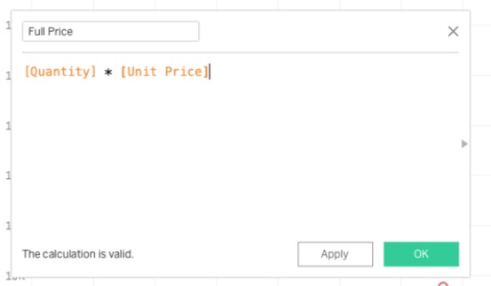

?teacher=1 בכתובת הדף: מה לומר, איפה לעצור ומה לבדוק לפני שממשיכים.עד עכשיו גררתם שדות ולחצתם. במודול הזה כותבים כללים. מנקים טקסט מבולגן עם ביטויים רגולריים, מפרקים תאריך שהגיע כטקסט, מתכננים תנאים שלא מתבלבלים, ומריצים תרחישים עם פרמטרים. אחרי זה יוצאים מהחוברת: בונים דף אינטרנט משלכם שמטמיע את הגרף שפרסמתם ושולט בו מ-JavaScript, מעלים אותו בחינם, וכותבים סקריפט בפייתון שמכין את הקובץ לפני ש-Tableau Public בכלל רואה אותו. בסוף יש מפה כנה של מה שקיים מעבר ל-Tableau Public ואי אפשר להריץ אצלכם.
מה צריך להיות מוכן: הקובץ scoop_sales_2024_2025.csv, ושדה מחושב ופרמטר מוכרים לכם (מודול 8 ו-מודול 10). לחלק ההטמעה צריך גרף שפרסמתם ל-Tableau Public (מודול 14), או שתשתמשו בדוגמה של Tableau עצמה. לחלק הסקריפטים מספיקים פייתון, עורך טקסט וחשבון GitHub חינמי. את קובץ הטקסט המבולגן בונים בסעיף 3 מתוך הדף הזה. שום דבר כאן לא דורש רישיון של Tableau.
שלוש תוויות חוזרות בכל המודול, כדי שתדעו מה אתם מריצים: רץ ב-Tableau Public Public ועוד כלי חינמי מבחוץ לא ב-Public: ידע בלבד
Unit Price, Order ID, Order Date), ולכן הנוסחאות כתובות כך; שדה הספירה נקרא על שם הקובץ (scoop_sales_2024_2025.csv (Count), בגרסאות ישנות Number of Records); עורך השדה המחושב (שם ברירת מחדל Calculation1, השורה The calculation is valid., הכפתורים Apply ו-OK); Create Parameter... בתפריט החלונית Data; Text File Properties... עם Character set; והאובייקט Extension ברשימת האובייקטים של הדשבורד. עדיין פתוח (מרוכז ברשימת הבדיקה לפני הקורס במודול 19): (1) כל תבנית regex בתוך Tableau Public, כולל ההחלפה ב-REGEXP_REPLACE (האם מוחלפות כל ההתאמות, ואיך כותבים הפניה לקבוצה). (2) DATEPARSE על תא ריק ועל תבנית שגויה (Null או גלגול לתאריך אחר). (3) האם תפריט Insert בכותרת הגיליון מציג פרמטר, ואיך STR מציג מספר עשרוני. (4) דף ההטמעה נבדק משרת מקומי (http://127.0.0.1) ומ-GitHub Pages; פתיחה ישירה כקובץ (file://) לא נבדקה. (5) פתיחת קובץ .hyper ב-Tableau Public. (6) תוסף מאושר בוויז ציבורי. (7) תוויות ב-GitHub משתנות מגרסה לגרסה.מה אפשר לתכנת ב-Tableau Public ומה לא
מנהלת הרשת של Scoop & Go שואלת: ״אם כבר מנתחים ב-Tableau, אפשר גם לתכנת אותו?״ התשובה היא כן, בשלוש שכבות. את השתיים הראשונות אתם מריצים אצלכם בלי רישיון. את השלישית רק מכירים, וחשוב לדעת איפה היא מתחילה, כדי שלא תבנו משהו שלא יעבוד.
- במרכז: השפה של Tableau עצמה. שדה מחושב, פרמטר, regex, תאריכים. הכול רץ בתוך Tableau Public, על קובץ.
- סביב: דברים שאתם כותבים מחוץ ל-Tableau ומחברים אליו. דף אינטרנט שמטמיע את הגרף שלכם, סקריפט שמכין את הקובץ. צריך לזה כלים חינמיים בלבד.
- בחוץ: מה שקיים אצל משתמשים עם רישיון, Server או Cloud. Tableau Public לא מתחבר לזה, ולכן אין לזה תרגילים כאן.
הנה כל מה שבמודול, עם התווית שלו. כשתבנו משהו, תחזרו לטבלה הזאת ותבדקו באיזו שכבה אתם נמצאים.
| מה | שכבה | איפה במודול |
|---|---|---|
| ביטויים רגולריים, תאריכים מטקסט, IF ו-CASE מקוננים | רץ ב-Tableau Public | סעיפים 3 ו-4 |
| תבניות חישוב לדשבורד, פרמטרים ותרחישים | רץ ב-Tableau Public | סעיפים 5 ו-6 |
| הטמעה עם Embedding API v3, שליטה ב-JavaScript, אירוח ב-GitHub Pages | Public ועוד כלי חינמי | סעיפים 7 ו-8 |
סקריפט פייתון שמנקה CSV, כתיבת קובץ .hyper (אופציונלי) | Public ועוד כלי חינמי | סעיף 9 |
| תוספים (extensions) מאושרים | בדקו אם זמין אצלכם | סעיף 10 |
| TabPy ו-R, REST API, Tableau Server Client, Metadata API, webhooks, Prep | לא ב-Public: ידע בלבד | סעיף 10 |
בדיקת מוכנות: איזו שכבה אתם יכולים להריץ היום
- פתחו Tableau Public וטענו את
scoop_sales_2024_2025.csv. גררו את שדה הספירה לאזורTextבכרטיסMarks. הוא בתחתית החלונית Data, בנטוי, ונקרא על שם הקובץ:scoop_sales_2024_2025.csv (Count)(בגרסאות ישנות:Number of Records). למה: שכבה 1 רצה על הקובץ הזה, וצריך לוודא שנטען כולו. - פתחו חלון טרמינל (Terminal במק, PowerShell או Command Prompt בווינדוס) והריצו
python3 --version. בווינדוס לפעמים השם הואpython --version. למה: שכבה 2 צריכה פייתון. אם אין אצלכם, תתקינו מהאתר הרשמי של Python, או תדלגו על הסקריפטים: כל השאר רץ בלעדיהם. - בדקו שיש לכם עורך טקסט שיודע לשמור קובץ בקידוד UTF-8: Notepad, TextEdit במצב טקסט רגיל, או VS Code. למה: דף ההטמעה וקובצי ה-CSV הם קבצי טקסט פשוטים, ובעברית קידוד שגוי הופך הכול לג׳יבריש.
- אופציונלי: היכנסו ל-GitHub עם חשבון חינמי, או צרו חשבון. למה: שם נעלה את דף ההטמעה בסעיף 8.
תוצאה צפויה: שלוש שורות: במסך הנתונים מופיע המספר 6,575 (שורות הקובץ); בטרמינל מופיעה גרסת פייתון, רצוי 3.11 ומעלה; ויש לכם עורך טקסט פתוח. חשבון GitHub הוא רשות.
אי אפשר לכתוב פייתון בתוך חישוב ב-Tableau Public. בגרסאות עם רישיון יש פונקציות SCRIPT_REAL ודומות שממלאות את הנוסחה בקוד פייתון או R שרץ בשרת חיצוני. ב-Tableau Public הן לא זמינות: התיעוד הרשמי אומר שאי אפשר לפרסם חוברת שיש בה סקריפטים לשירות חיצוני. אל תבנו דשבורד על זה. מה שכן אפשר: להריץ את הפייתון לפני Tableau, ולטעון את התוצאה כקובץ (סעיף 9).
השכבה קובעת איפה הכלל גר, ואיפה הכלל גר קובע מי יכול לבדוק אותו. כלל שכתבתם בנוסחה נראה לכל מי שפותח את החוברת, ואפשר לראות אותו עובד על הסימנים. כלל שכתבתם בסקריפט נשאר מחוץ ל-Tableau, ורק מי שיש לו את הסקריפט יכול לבדוק אותו. הכלל שתראו לאורך המודול: שמים כל כלל במקום שבו הכי קל לבדוק אותו, ולא במקום שבו הכי נוח לכתוב אותו.
בצוותי דאטה בארגונים, חלוקת העבודה הזאת שכיחה: סקריפט או שאילתה מכינים את הטבלה, ובכלי הדוחות כותבים רק את הכללים העסקיים (מה נחשב לקוח פעיל, מה נחשב חריג). אצלכם, במקום מחסן נתונים יש קובץ, והעיקרון אותו דבר.
שאלה: רוצים שמספרי טלפון של לקוחות לא יופיעו בגרף שתפרסמו. איפה הייתם שמים את הכלל: בנוסחה בתוך Tableau, או בסקריפט שרץ לפני? מה היה קורה לעמודת הטלפון המקורית בכל אחד מהמקרים?
מה מהבאים רץ אצלכם ב-Tableau Public בלי שום כלי נוסף?
דף HTML משלכם שמטמיע גרף שפרסמתם, באיזו שכבה הוא?
ארבע רמות חישוב: על מה הנוסחה רצה
שתי נוסחאות נראות אותו דבר, אבל אחת נותנת 52.55% והשנייה 50.98%. אחת מגיבה למסנן והשנייה לא. ההבדל הוא לא בסימנים שכתבתם. ההבדל הוא באיזה שלב Tableau מריץ את הנוסחה ועל אילו שורות. מי שיודע את זה לא מנחש, הוא קורא את הנוסחה ויודע מה היא תחזיר.
[Unit Price] * [Quantity] רצה על כל שורת מכירה בנפרד, ו-SUM([Sales]) רצה על כל השורות של סימן אחד בגרף.נעקוב אחרי שש שורות אמיתיות מהקובץ של Scoop & Go (שלושה סניפים, שתי מכירות בכל אחד, כולן עם הנחה של 10%), ונראה את ארבע הרמות אחת אחרי השנייה.
- שש שורות. בכל אחת מחיר, הנחה ומכירה. הצבע מסמן סניף.
- רמת שורה.
Net Price = [Unit Price] * (1 - [Discount])רצה על כל שורה לבד, לפני שמסכמים משהו. יש שש שורות, ולכן שש תוצאות. - צבירה. הגרף מציג סניף לכל סימן.
SUM([Sales])מתכנס לשלושה סימנים: 100.8, 57.6 ו-37.8. נוסחה כמוSUM([Profit]) / SUM([Sales])רצה פה, על קבוצת השורות של הסימן. - רמת פירוט (LOD).
{ FIXED : SUM([Sales]) }מחושב בנפרד, על כל הטבלה (196.2), ומוצמד בחזרה לכל סימן. כך אפשר לחשב את הנתח של כל סניף: 100.8 חלקי 196.2 הם 51.4%. - חישוב טבלה.
RANK(SUM([Sales]))לא נוגע בשורות המקור. הוא מסתכל על שלושת הסימנים שכבר חושבו ומדרג אותם. לכן הוא רץ אחרון, וכל שינוי במה שמוצג משנה אותו.
| רמה | על מה רצה | דוגמה | איך מגיבה למסנן רגיל |
|---|---|---|---|
| שורה | כל שורה בקובץ, בנפרד | [Unit Price] * (1 - [Discount]) | השורות שנותרו אחרי הסינון הן אלה שמחושבות |
| צבירה | כל השורות של סימן אחד | SUM([Profit]) / SUM([Sales]) | מגיבה: סכום רק של מה שנשאר |
| רמת פירוט | הרמה שאתם כותבים בסוגריים המסולסלים | { FIXED [Branch] : SUM([Sales]) } | FIXED לא מגיב למסנן ממדים רגיל. INCLUDE ו-EXCLUDE כן |
| חישוב טבלה | הסימנים שכבר חושבו בגרף | RANK(SUM([Sales])) | מגיב תמיד, כי רץ אחרי הסינון |
את סדר הסינון והחישוב כבר ראיתם במודול 10. הנה אותו סולם, הפעם עם מקום לכל רמה. ככל שהשלב נמוך יותר ברשימה, הוא רץ מאוחר יותר ורואה פחות שורות.
- מסנני מיצוי (
Extract filters) - מסנני מקור נתונים (
Data source filters) - מסנני הקשר (
Context filters) - סטים, מסנן מותנה, Top N, וLOD מסוג FIXED
- מסנני ממדים רגילים (
Dimension filters) - LOD מסוג INCLUDE ו-EXCLUDE ושילוב נתונים
- מסנני מדדים (
Measure filters) - חישובי טבלה, תחזיות, אשכולות וסך הכול
- מסנני חישובי טבלה
- קווי מגמה וקווי עזר
התרשים הרשמי של Tableau לא מציג "חישובי שורה" ו"צבירות" כשלבים נפרדים. הם חלק מהשאילתה שיוצאת לנתונים, ולכן הם רואים את מה שהמסננים שמעליהם השאירו.
עשר נוסחאות על נתוני Scoop & Go. בחרו לכל אחת את הרמה. אחרי כל תשובה תראו למה.
הדמיה בדפדפן. היא לא מריצה Tableau, היא רק בודקת שאתם מזהים את הרמה.
ארבע רמות בגרף אחד, ומה קורה כשמסננים
- צרו שדה מחושב
Net Price(רמת שורה):[Unit Price] * (1 - [Discount])
למה: מחיר אחרי הנחה, לכל שורה בנפרד. - צרו
Check Sales(צבירה של ביטוי ברמת שורה):SUM([Net Price] * [Quantity])
למה: בדיקת שפיות. אם הכול נכון, הסכום חייב להיות שווה ל-SUM([Sales]). - צרו
Margin %(צבירה):SUM([Profit]) / SUM([Sales])
- צרו
Share of Network(שימוש ב-LOD):SUM([Sales]) / ATTR({ FIXED : SUM([Sales]) })למה: המכנה הוא סך כל הרשת, ללא קשר למה שמוצג. - צרו
Sales Rank(חישוב טבלה):RANK(SUM([Sales]))
- בנו טבלת טקסט:
Branchל-Rows, ואז סמנוSUM(Sales)ואת ארבעת השדות החדשים ובחרוText Tableב-Show Me. מיינו מהגדול לקטן לפי מכירות. למה: שורה לכל סניף, וכל אחת מארבע הרמות בעמודה משלה. - גררו את
Regionל-Filtersובחרו רקSouth. למה: מסנן ממדים רגיל. נראה מי מגיב.
תוצאה צפויה לפני המסנן: Check Sales בטבלה של כל הסניפים מסתכם ל-236,820.9 (ייתכן שיוצג 236,821 לפי הפורמט), בדיוק כמו SUM(Sales). תשע שורות:
| Branch | SUM(Sales) | Margin % | Share of Network | Sales Rank |
|---|---|---|---|---|
| Tel Aviv Dizengoff | 44,194.1 | 52.0% | 18.7% | 1 |
| Tel Aviv Port | 39,446.0 | 51.5% | 16.7% | 2 |
| Jerusalem Mamilla | 33,450.8 | 50.9% | 14.1% | 3 |
| Eilat Promenade | 31,473.7 | 50.0% | 13.3% | 4 |
| Haifa German Colony | 27,389.2 | 51.8% | 11.6% | 5 |
| Netanya Beach | 26,840.2 | 50.3% | 11.3% | 6 |
| Beer Sheva Grand Mall | 18,797.2 | 51.0% | 7.9% | 7 |
| Rehovot Mall | 9,925.2 | 48.3% | 4.2% | 8 |
| Ashdod Beach Pop-up | 5,304.5 | 48.7% | 2.2% | 9 |
תוצאה צפויה אחרי המסנן South: נשארות שלוש שורות: Eilat Promenade, Beer Sheva Grand Mall ו-Ashdod Beach Pop-up. המכירות והרווחיות לא השתנו (31,473.7 ו-50.0%, 18,797.2 ו-51.0%, 5,304.5 ו-48.7%). הנתח לא השתנה: 13.3%, 7.9% ו-2.2%, כי המכנה של FIXED נשאר 236,820.9. הדירוג השתנה: 1, 2 ו-3 במקום 4, 7 ו-9. אחוזים מעוגלים לעשירית. אם אצלכם משהו אחר, בדקו שהמסנן הוא מסנן רגיל ולא מסנן הקשר.
ממוצע של יחסים הוא לא יחס של סכומים. SUM([Profit]) / SUM([Sales]) נותן 50.98% לכל הרשת. AVG([Profit] / [Sales]) נותן 52.55%, כי הוא מחשב יחס לכל שורה ואז ממוצע, וכך מכירה של 12 שקלים שוקלת כמו מכירה של 80. שתי הנוסחאות תקינות. רק אחת עונה על "מה הרווחיות של הרשת". כשבודקים רווחיות, כמעט תמיד רוצים את הראשונה.
לפני שכותבים נוסחה, שואלים שתי שאלות. הראשונה: על מה היא צריכה לרוץ, על כל שורה, על סימן, ברמה אחרת או על מה שכבר מוצג. השנייה: מה היא צריכה לעשות כשמסננים. שתי התשובות קובעות את הרמה, והרמה קובעת את הכלי. הטעות הנפוצה היא לבחור כלי (למשל LOD) כי הוא מוכר, לפני ששואלים את שתי השאלות.
בעולם הנתונים קוראים לזה גרעיניות (grain): באיזו רמה נמדד כל מספר בדוח. צוותי BI כותבים אותה בכותרת של כל מדד: ״מכירות, לפי סניף, ליום״. כשאין גרעיניות כתובה, אנשים שונים מחשבים "אותו מדד" ומקבלים מספרים שונים.
שאלה: אחרי המסנן South הדירוג של Eilat Promenade השתנה מ-4 ל-1, והנתח שלו נשאר 13.3%. איזה מהשניים עונה על ״כמה מהרשת הסניף הזה?״ ואיזה על ״איזה מקום יש לו בין מי שמוצג?״ ולמה זה לא אותו דבר?
מה הרמה של AVG([Profit] / [Sales])?
מוסיפים מסנן Region רגיל. איזה מהמספרים של Eilat Promenade בטבלה משתנה, אף שאף אחת משורות Eilat לא נגרעה?
ATTR({ FIXED : SUM([Sales]) }) זהה לזה שבמודול 10. לפני השיעור הריצו בתוכנה את Check Sales: צפוי להיות זהה ל-SUM(Sales) כי בקובץ Sales = Quantity * Unit_Price * (1 - Discount) בכל 6,575 השורות (נבדק בפייתון, אפס חריגות). מה שלא אומת: המראה המדויק של פיל חישוב טבלה בגרסה שלכם.ביטויים רגולריים: סדר בטקסט מבולגן
באפליקציה של Scoop & Go לקוחות כותבים פניות בטקסט חופשי: ״Order SG-01234 arrived melted. Rating 2/5״. המערכת שומרת הכול בעמודה אחת. בתוך הטקסט מתחבאים מספר הזמנה, דירוג, קוד קופון ולפעמים מספר טלפון. עם 24 פניות אפשר לקרוא ולסמן. עם 24 אלף צריך כלל שרץ לבד.
regex): תבנית שמתארת איך נראה הטקסט שמחפשים, למשל ״האותיות SG, מקף, וחמש ספרות״. דוגמה: SG-[0-9]{5} מתאים ל-SG-01234 ולא ל-SG-12.קובץ הפניות: בונים אותו מהדף הזה
הנתונים כאן בדויים, וכתבתי אותם בכוונה מבולגנים: ארבעה עמודות רגילות ועמודת Note של טקסט חופשי באנגלית ובעברית, שמות סניפים בכתיב לא אחיד, ותאריכים שהגיעו כטקסט. הלחצן ״העתק״ בפינת הבלוק מעתיק את כל הטקסט.
Ticket,Received,Resolved,Branch,Note T-1001,03/05/2025 09:15,03/05/2025 11:40,Tel Aviv Dizengoff,"Order SG-01234 arrived melted. Rating 2/5. Coupon SUMMER-20 was not applied. Call me 050-555-0101" T-1002,03/05/2025 10:02,03/05/2025 10:30, tel aviv dizengoff ,"Great service! Rating 5/5 for order SG-01301" T-1003,14/05/2025 13:47,15/05/2025 09:00,TEL AVIV PORT,"Late delivery to Ramat Gan, order SG-01420. Rating 1/5. Refund 38.50 requested. Phone 052-555-0188" T-1004,16/05/2025 18:20,16/05/2025 19:05,Tel Aviv Port,"Wrong flavor, I asked for pistachio. SG-01477 Rating 3/5" T-1005,21/05/2025 12:10,,Jerusalem Mamilla,"הזמנה SG-01512 הגיעה נמסה. Rating 2/5. קוד SUMMER-20 לא עבד" T-1006,22/05/2025 14:33,22/05/2025 16:03,jerusalem mamilla,"Came on 13/5 and the cone was cold, rated 4/5. Order SG-01533" T-1007,02/06/2025 08:55,02/06/2025 09:10,Haifa German Colony ,"Cannot apply coupon FRIEND-15 in the app. No order id yet" T-1008,04/06/2025 20:41,05/06/2025 10:15,HAIFA GERMAN COLONY,"Driver was rude and late. Order SG-01690. Rating 1/5. Refund 52.00 please. Call 054-555-0123" T-1009,07/06/2025 11:05,07/06/2025 11:50,Eilat Promenade,"Perfect, thanks. Rating 5/5. SG-01702" T-1010,09/06/2025 16:30,10/06/2025 08:20, Eilat Promenade,"הגלידה הגיעה מאוחר מאוד. SG-01745 דירוג: 2/5. החזר 24.50 בבקשה" T-1011,10/06/2025 19:12,10/06/2025 21:12,Tel Aviv Dizengoff,"Missing item: no spoon with the sundae. SG-01788. Coupon WELCOME-10 used. Rating 3/5" T-1012,11/06/2025 09:48,,TEL AVIV DIZENGOFF,"Where is my order? SG-01801. Phone 050-555-0145" T-1013,12/06/2025 13:00,12/06/2025 13:25,Tel Aviv Port,"Love the halva sundae! Rating 5/5. Order sg-01822" T-1014,18/06/2025 15:15,19/06/2025 12:45,Jerusalem Mamilla,"Charged twice for SG-01855. Refund 41.00 needed. Rating 2/5" T-1015,19/06/2025 10:20,19/06/2025 12:00,Haifa German Colony,"Cold coffee, melted ice. Coupon CHOC-10. SG-01860. Rating 2/5. Contact 053-555-0167" T-1016,23/06/2025 17:45,23/06/2025 18:15,Eilat Promenade,"Fast and friendly. Rating 4/5. SG-01901. Coupon SUMMER-20 worked" T-1017,25/06/2025 12:30,25/06/2025 15:30,Tel Aviv Dizengoff,"The order never arrived (SG-01934). Rating 1/5. Refund 67.50 promised. 058-555-0199" T-1018,26/06/2025 09:09,26/06/2025 09:39,Tel Aviv Port,"Question about allergens in the Choco Stick, no order" T-1019,29/06/2025 21:00,30/06/2025 09:00,Jerusalem Mamilla,"מנה חסרה בהזמנה SG-01977. Rating 3/5. טלפון 050-555-0102" T-1020,01/07/2025 14:14,01/07/2025 14:44,Haifa German Colony,"Excellent! Rating 5/5. SG-02002. Coupon FRIEND-15" T-1021,02/07/2025 18:30,03/07/2025 08:30,Eilat Promenade,"Late again, order SG-02040. Rating 2/5. Refund 29.90. Call 052-555-0177" T-1022,05/07/2025 11:11,05/07/2025 12:11,TEL AVIV DIZENGOFF ,"Wrong order delivered: SG-02065 instead of SG-02056. Rating 1/5" T-1023,06/07/2025 19:55,,Tel Aviv Port,"Melted again!! SG-02077. Rating 2/5. Coupon SUMMER-20 refused" T-1024,08/07/2025 10:40,08/07/2025 11:00,Jerusalem Mamilla,"Thank you. Rating 4/5. SG-02090"
שומרים וטוענים את קובץ הפניות
- לחצו ״העתק״ על הבלוק למעלה. פתחו עורך טקסט (במק: TextEdit, ואז
Formatו-Make Plain Text) והדביקו. למה: קובץ CSV הוא טקסט פשוט, אין צורך ב-Excel. - שמרו בשם
messy_tickets.csvבקידוד UTF-8 (בחלון השמירה יש בחירה שלEncoding). למה: אחרת העברית תהפוך לסימני שאלה. - ב-Tableau Public:
Connect,Text file, בחרו את הקובץ. למה: זה אותו מסלול טעינה כמו של Scoop & Go. - אם העברית מופיעה כג׳יבריש, בעמוד Data Source פתחו את החץ של הטבלה, בחרו
Text File Properties..., ובשדהCharacter setבחרוUTF-8. - עברו לגיליון. גררו את שדה הספירה
messy_tickets.csv (Count)ל-Text, ו-Branchל-Rows. למה: מוודאים כמה שורות נטענו ואיך נראה הסניף.
תוצאה צפויה: בלי Branch, שדה הספירה מראה 24. חמש עמודות: Ticket, Received, Resolved, Branch, Note. התאריכים הם טקסט (עוד לא תאריכים). בפייתון, Branch מכיל 14 ערכים שונים בבדיקה מדויקת של מחרוזות, לחמישה סניפים בלבד: חלק מהם עם רווח בהתחלה או בסוף, חלק באותיות גדולות. כמה ערכים תראו ב-Tableau תלוי באופן שבו הוא מתייחס לרווחים ולאותיות, ולכן אולי תראו פחות. זה לא אומת, וזה בדיוק מה שנתקן בהמשך.
איך המנוע מחפש
לפני התחביר, רגע לראות מה קורה בפנים. המנוע לא מחפש ״בערך״. הוא מנסה להתחיל את התבנית מכל מקום בטקסט, משמאל לימין, עד שהתבנית כולה מתקיימת.
- הטקסט והתבנית. התבנית מחפשת SG ואחריו מקף וחמש ספרות.
- המנוע מנסה להתחיל מכל מקום בטקסט. באות הראשונה אין SG, וגם לא בחמש שאחריה.
- במקום השביעי נמצא S, אחר כך G, אחר כך מקף. עד עכשיו מתאים.
- אחרי המקף באות בדיוק חמש ספרות. כל התבנית התקיימה: יש התאמה.
- הפונקציה מחזירה לפי הסוג שלה: אמת/שקר, או הטקסט שהתאים.
- בטקסט בלי מספר הזמנה אף מקום לא מתאים. התוצאה NULL, לא טקסט ריק.
המילון של המודול
אין צורך לשנן. אלה כל התווים שנשתמש בהם, כל אחד עם דוגמה מהפניות.
| תבנית | מה היא אומרת | דוגמה |
|---|---|---|
[0-9] | ספרה אחת | [0-9]{5} הוא חמש ספרות, כמו 01234 |
[A-Z], [א-ת] | אות גדולה באנגלית, אות בעברית | [A-Z]{4,} הוא ארבע אותיות גדולות או יותר, כמו SUMMER |
[^0-9] | תו אחד שאינו ספרה (^ בתוך סוגריים מרובעים אומר ״לא״) | [^0-9/]: לא ספרה ולא קו נטוי |
. | תו אחד כלשהו | SG.01234 מתאים גם ל-SG-01234 וגם ל-SG 01234 |
[.] | נקודה אמיתית, לא ״כל תו״ | [0-9]+[.][0-9]{2} מתאים ל-38.50 |
{5}, {4,} | בדיוק חמש פעמים, ארבע פעמים או יותר | [0-9]{3} הוא שלוש ספרות |
+, *, ? | אחד או יותר, אפס או יותר, אפס או אחד | [ ]+ הוא רווח אחד או יותר |
^, $ | תחילת הטקסט, סוף הטקסט | ^T- מתאים רק אם הטקסט מתחיל ב-T- |
| | או | late|cold |
( ) | קבוצה. מה שבתוכה הוא מה ש-REGEXP_EXTRACT מחזיר | (SG-[0-9]{5}) |
(?: ) | קבוצה שלא מוחזרת, רק לארגון | (?:Rating|rated) ([1-5]) |
בדף הזה אין קו נטוי הפוך (\d, \s ודומיהם). בתיעוד של Tableau הכתיב שלו מופיע בשתי צורות, ולא אימתנו כמה פעמים צריך לכתוב אותו בתוך מחרוזת. לכן כל התבניות כאן בנויות מסוגריים מרובעים: [0-9] במקום ספרה, [ ] במקום רווח, [.] במקום נקודה.
ארבע פונקציות
REGEXP_MATCH(טקסט, תבנית): מחזירה אמת אם התבנית נמצאת איפשהו בטקסט, ושקר אם לא. דוגמה: REGEXP_MATCH("call 050-555-0101", "05[0-9]-[0-9]{3}") היא אמת.REGEXP_EXTRACT(טקסט, תבנית): מחזירה את מה שהקבוצה הראשונה תפסה, או NULL אם אין התאמה. דוגמה: REGEXP_EXTRACT("Order SG-01234", "(SG-[0-9]{5})") היא SG-01234.REGEXP_EXTRACT_NTH(טקסט, תבנית, מספר): כמו הקודמת, אבל בוחרת איזו קבוצה להחזיר. 0 הוא כל ההתאמה, 2 היא הקבוצה השנייה. דוגמה: REGEXP_EXTRACT_NTH("abc 123", "([a-z]+) ([0-9]+)", 2) היא 123.REGEXP_REPLACE(טקסט, תבנית, החלפה): מחליפה את מה שהתאים בטקסט אחר. דוגמה: REGEXP_REPLACE("call 050-555-0101", "05[0-9]-[0-9]{3}-[0-9]{4}", "[phone]") היא call [phone].הנה מה שהן עושות על חמש פניות מהקובץ. שימו לב לשורות שבהן התוצאה ריקה: הן יחזרו בהמשך.
| Ticket | Note (חלקי) | EXTRACT של מספר הזמנה | MATCH של טלפון |
|---|---|---|---|
| T-1001 | Order SG-01234 arrived melted. Rating 2/5 ... Call me 050-555-0101 | SG-01234 | true |
| T-1007 | Cannot apply coupon FRIEND-15 in the app. No order id yet | NULL | false |
| T-1013 | Love the halva sundae! Rating 5/5. Order sg-01822 | NULL | false |
| T-1022 | Wrong order delivered: SG-02065 instead of SG-02056. Rating 1/5 | SG-02065 | false |
| T-1019 | מנה חסרה בהזמנה SG-01977. Rating 3/5. טלפון 050-555-0102 | SG-01977 | true |
זו הדמיה ב-JavaScript, לא Tableau. היא נותנת מקום להתנסות בלי להתחיל כל פעם מחדש. המנוע של Tableau שונה במקצת (הטבלה בהמשך הסעיף), ולכן כל תבנית שתעבוד כאן בדקו גם בתוכנה.
חמישה שדות מחושבים על הפניות
- צרו
Order ID:REGEXP_EXTRACT(UPPER([Note]), "(SG-[0-9]{5})")למה: UPPER לפני החיפוש, כדי ש-sg באותיות קטנות (פנייה T-1013) לא יפספס. - צרו
Rating:INT(REGEXP_EXTRACT_NTH([Note], "(^|[^0-9/])([1-5])/5", 2))
למה: הקבוצה הראשונה בודקת מה לפני הספרה (תחילת טקסט, או תו שהוא לא ספרה ולא קו נטוי), והקבוצה השנייה היא הדירוג. ככה ״13/5״ בתאריך לא נתפס. INT הופך את הטקסט למספר. - צרו
Coupon:REGEXP_EXTRACT([Note], "([A-Z]{4,}-[0-9]{2})") - צרו
Refund:ZN(FLOAT(REGEXP_EXTRACT([Note], "([0-9]+[.][0-9]{2})")))למה: מחלצים טקסט, הופכים למספר עשרוני, ו-ZN מחליף NULL באפס כדי שאפשר יהיה לסכום. - צרו
Has Phone:REGEXP_MATCH([Note], "0[0-9]{2}-[0-9]{3}-[0-9]{4}") - גררו
Ticketל-Rows, ואת חמשת השדות החדשים ל-Text. למה: טבלה שורה לכל פנייה, כדי לבדוק כל שורה מול הדף הזה. - בגיליון חדש בנו טבלת סיכום: שדה הספירה
messy_tickets.csv (Count)כטקסט, ואז שנו את הצבירה של כל שדה בלחיצה ימנית על הפיל (Measure (Sum)):Order IDכ-Count,Ratingכ-Average,Refundכ-Sum. וגם:Couponל-Rowsעם שדה הספירה כטקסט. למה: כך בודקים כל שדה מול המספרים שבסעיף ״תוצאה צפויה״.
תוצאה צפויה: COUNT([Order ID]) הוא 22 מתוך 24 (בלי UPPER היה 21). Rating קיים ב-21 פניות, והממוצע AVG([Rating]) הוא 2.81 (סכום 59 חלקי 21). התפלגות הדירוגים: 1 ב-4 פניות, 2 ב-7, 3 ב-3, 4 ב-3, 5 ב-4. Coupon קיים ב-8 פניות: SUMMER-20 ארבע פעמים, FRIEND-15 פעמיים, WELCOME-10 ו-CHOC-10 פעם אחת כל אחד, ו-Null ב-16 פניות. SUM([Refund]) הוא 253.4, בשש פניות. Has Phone הוא אמת ב-8 פניות. בפנייה T-1006 הדירוג הוא 4.
מיסוך טלפון וניקוי שמות סניפים
- צרו
Note Masked:REGEXP_REPLACE([Note], "0[0-9]{2}-[0-9]{3}-[0-9]{4}", "[phone]") - צרו
Branch Clean:UPPER(TRIM(REGEXP_REPLACE([Branch], "[ ]+", " ")))
למה: קודם מצמצמים רווחים כפולים (Tel Aviv Port), אחר כך חותכים רווחים מהקצוות, ואז אות גדולה אחת לכל השמות. - בנו גיליון עם
Branch Cleanב-Rowsושדה הספירהmessy_tickets.csv (Count)כטקסט. - בגיליון נוסף:
COUNTD([Branch])מולCOUNTD([Branch Clean]). - בדקו שאין טלפון שנשאר:
SUM(IF REGEXP_MATCH([Note Masked], "0[0-9]{2}-[0-9]{3}-[0-9]{4}") THEN 1 ELSE 0 END)
תוצאה צפויה: Branch Clean נותן חמישה סניפים: TEL AVIV DIZENGOFF 6 פניות, TEL AVIV PORT 5, JERUSALEM MAMILLA 5, HAIFA GERMAN COLONY 4, EILAT PROMENADE 4 (סך 24). COUNTD([Branch Clean]) הוא 5. בבדיקת הטלפון על Note Masked מתקבל 0, ועל Note המקורי מתקבל 8. ב-Note Masked שמונה פניות כוללות את הטקסט [phone].
הטבלה שמסבירה למה Tableau, פייתון ו-JavaScript לא תמיד מסכימים
רוב הכלים מבינים regex, אבל כל אחד מהם הוא ניב אחר. Tableau לפי התיעוד שלו משתמש בספריית ICU. הנה ההבדלים שיכולים לפגוע בכם כשמעבירים תבנית ממקום למקום, לפי התיעוד של כל שפה.
| מה | ICU (המנוע ש-Tableau מצהיר עליו) | Python (re) | JavaScript |
|---|---|---|---|
| קבוצה עם שם | (?<name>...) | (?P<name>...) | (?<name>...) |
| הפניה לקבוצה בהחלפה | $1 | \1 | $1 |
אות מכל שפה, \p{L} | נתמך | לא נתמך במודול re הרגיל | צריך את הדגל u |
| דגל לא רגיש לגודל אותיות | (?i) בתוך התבנית | (?i) בתחילת התבנית, או re.I | דגל מחוץ לתבנית: /.../i |
| ״מה שלפני״ (lookbehind) | נתמך באורך חסום | רק באורך קבוע | נתמך בדפדפנים חדשים |
אל תבנו על שורה בטבלה הזאת בלי לבדוק ב-Tableau עצמו. התיעוד של Tableau אומר שהמנוע הוא ICU, אבל לא כל תכונה נבדקה בתוכנה, ולכן הדף הזה נשאר בתת-קבוצה שפשוטה בכל הניבים: סוגריים מרובעים, כמתים, קבוצות ו-|. הפניה לקבוצה בתוך ההחלפה לא נבדקה בתוכנה, ולכן לא בנינו עליה שום תרגיל.
תבנית שתופסת יותר מדי. ב-T-1006 כתוב ״Came on 13/5 and the cone was cold, rated 4/5״. התבנית הפשוטה ([1-5])/5 מוצאת קודם את ״3/5״ שבתוך התאריך 13/5 ומחזירה 3. הדירוג האמיתי הוא 4. בלי הבדיקה הנכונה, הממוצע יוצא 2.76 ולא 2.81, ואף אחד לא רואה את הטעות. הפתרון: להגדיר מה צריך להיות לפני התבנית, בדיוק כמו ב-(^|[^0-9/]).
REGEXP_EXTRACT מחזירה רק את ההתאמה הראשונה. ב-T-1022 יש שני מספרי הזמנה: SG-02065 ו-SG-02056. הפונקציה תחזיר רק SG-02065. אין פונקציה ״מצא את כולם״. כדי לקבל את השני כותבים תבנית עם שתי קבוצות, (SG-[0-9]{5}).*(SG-[0-9]{5}), ובוחרים ב-REGEXP_EXTRACT_NTH את הקבוצה 2.
הכוכבית תופסת הכול. Refund (.*) נראית הגיונית, אבל .* תופסת עד סוף הטקסט: ב-T-1003 היא מחזירה ״38.50 requested. Phone 052-555-0188״, כולל הטלפון. כשיש לכם מושג ברור איך נראה הערך (ספרות ונקודה), כתבו אותו: ([0-9]+[.][0-9]{2}).
מיסוך בנוסחה לא מוחק את העמודה המקורית. הוספתם Note Masked, אבל Note עם מספרי הטלפון עדיין בקובץ. ב-Tableau Public כל הנתונים שבחוברת ניתנים להורדה כברירת מחדל, ואצלנו אין אימות אם הסתרת שדה מוציאה אותו מהמיצוי שמתפרסם. הדרך הבטוחה: להוציא את העמודה מהקובץ לפני שטוענים אותו. את זה עושים בסעיף 9 עם סקריפט.
Regex הופך טקסט חופשי לעמודות. אחרי שיש עמודת דירוג ועמודת סכום החזר, אפשר לחשב ממוצע, לסנן ולצבוע, בדיוק כמו בכל נתון אחר. הערך האמיתי הוא לא התבנית עצמה אלא הבדיקה: כל שדה חדש מחזיר NULL בחלק מהשורות, ואתם צריכים לדעת אם זה בגלל שאין שם ערך או בגלל שהתבנית פספסה. בשורות של Scoop & Go, שלוש פניות בלי דירוג הן שלוש פניות בלי דירוג, ופנייה אחת עם sg קטן היא פספוס.
אנשי תמיכה ושיווק מחלצים כך מספרי הזמנה, קודי מבצע ותגיות מהודעות, קבצי לוג וכתובות. אנשי כספים מנקים בעזרת regex קודי חשבון ומספרי חשבונית. לפני שמפרסמים נתון שנגזר מטקסט חופשי, הגישה הנפוצה היא לבדוק ידנית מדגם של שורות, ולא רק לסמוך על התבנית.
שאלה: קיבלתם עמודת Order ID עם 21 ערכים ו-3 NULL. איך תדעו אם שלוש הפניות האלה באמת בלי מספר הזמנה, או שהתבנית פספסה? מה תעשו קודם?
מה מחזירה REGEXP_EXTRACT כשהתבנית לא נמצאת בטקסט?
ZN או IFNULL כשצריך ערך ברירת מחדל, ובדיקה כמו ISNULL כשצריך לזהות מי לא נמצא.מה מחזירה REGEXP_EXTRACT("Order SG-01234", "SG-([0-9]{5})")?
SG- שלפניה נדרש להתאמה אבל לא מוחזר. כדי לקבל את כל ההתאמה, שמים את הכול בקבוצה: (SG-[0-9]{5}).בפנייה יש שני מספרי הזמנה. איך מקבלים את השני?
התבנית SG-[0-9]{5} פספסה את sg-01822. מה הפתרון הפשוט ביותר?
re של פייתון ועם אותה תבנית ב-JavaScript של ההדמיה (שתי התוצאות זהות). לא הורצו ב-Tableau. לפני השיעור טענו את הקובץ ב-Tableau Public והריצו כל אחת מהתבניות: (1) האם הקידוד של עברית נקרא נכון בלי הגדרה. (2) כמה ערכים שונים יש ב-Branch הגולמי: Tableau עשוי להתעלם מרווחים בקצוות או מגודל אותיות, ואז המספר יהיה קטן מ-14. (3) האם REGEXP_REPLACE מחליפה את כל ההתאמות (בתרגיל יש טלפון אחד בכל שורה, ולכן זה לא משפיע) ואיך כותבים הפניה לקבוצה בהחלפה. (4) הערה: REGEXP_EXTRACT_NTH אינה זמינה בכל מקורות הנתונים לפי התיעוד, אבל קובץ CSV ב-Public הוא מיצוי. (5) שהתבנית בנויה כמחרוזת קבועה: בתיעוד כתוב שבמיצוי התבנית חייבת להיות קבועה, כלומר אי אפשר לבנות אותה משדה או מפרמטר.תאריכים מטקסט ותנאים מקוננים: מסדרים את הפניות
יש לנו עכשיו דירוג, החזר וטלפון. עוד לא ענינו על שתי שאלות של מנהלת השירות: כמה זמן לוקח לטפל בפנייה, ובאיזה סדר לטפל בהן. הראשונה מחייבת תאריכים אמיתיים, והשנייה מחייבת תנאים שלא מתבלבלים.
תאריך שהגיע כטקסט
בעמודה Received כתוב 03/05/2025 09:15. Tableau רואה את זה כמחרוזת, ולכן אי אפשר לחסר שני תאריכים, לקבץ לחודשים או לשרטט ציר זמן. צריך להגיד לו איך הטקסט בנוי.
DATEPARSE: פונקציה שהופכת טקסט לתאריך לפי תבנית שאתם כותבים. דוגמה: DATEPARSE("dd/MM/yyyy", "15/01/2025") היא ה-15 בינואר 2025.| סימן בתבנית | מה הוא | בדוגמה 03/05/2025 09:15 |
|---|---|---|
dd | יום בחודש | 03 |
MM | חודש (באותיות גדולות!) | 05 |
yyyy | שנה בארבע ספרות | 2025 |
HH | שעה 0 עד 23 | 09 |
mm | דקות (באותיות קטנות!) | 15 |
שני כללים רשמיים: התבנית חייבת לכלול את כל הרווחים, המקפים והקווים הנטויים שבטקסט, ו-DATEPARSE תלויה בהגדרות השפה של המחשב (בתיעוד יש דוגמה לתאריך עם שם חודש באנגלית שמתפרש אצל משתמש אחד ולא אצל אחר). אנחנו משתמשים רק בספרות, כדי להתרחק מהבעיה הזאת.
תאריכים אמיתיים וזמן טיפול
- צרו
Received Dt:DATEPARSE("dd/MM/yyyy HH:mm", [Received]) - צרו
Resolved Dtבאותה תבנית על[Resolved]. למה: שלוש פניות עדיין פתוחות, ולהן אין תאריך סגירה. - צרו
Handling Minutes:DATEDIFF("minute", [Received Dt], [Resolved Dt])למה: דקות ולא שעות, כדי לא ליפול במלכודת של ספירת גבולות (בהמשך). - גררו
Ticketל-Rows, ואת שלושת השדות ל-Text. הוסיפו שדהHour Received=DATEPART("hour", [Received Dt]).
תוצאה צפויה: בפנייה T-1001 התאריך הוא 3 במאי 2025, 09:15 (יום לפני חודש) וזמן הטיפול 145 דקות. ב-21 פניות יש זמן טיפול, ו-3 הן Null (T-1005, T-1012, T-1023). AVG([Handling Minutes]) הוא 320.5 דקות, כלומר כ-5.34 שעות. הארוך ביותר 1,290 דקות (T-1014) והקצר ביותר 15 (T-1007). לפי חודש: מאי 6 פניות, יוני 13, יולי 5. לפי שעה: שעות 9 ו-10 הן 3 פניות כל אחת, והשעות 8, 15, 16, 17, 20 ו-21 פנייה אחת כל אחת. אם DATEPARSE מחזירה Null בכל השורות, בדקו את התבנית ואת הרווח בין התאריך לשעה.
יום לפני חודש או חודש לפני יום. אם כתבתם MM/dd/yyyy HH:mm במקום dd/MM/yyyy HH:mm, 14 מ-24 הפניות (אלה שהיום בהן 12 או פחות) יתפרשו כתאריך אחר לגמרי: ה-03/05 הופך ל-5 במרץ. אף הודעת שגיאה לא תופיע. ב-10 הפניות שהיום בהן גדול מ-12 הפרשנות לא אפשרית, ומה Tableau מחזיר אצלכם (Null או משהו אחר) כדאי לבדוק. הכלל: לפני שסומכים על עמודת תאריך, בודקים תאריך אחד שהיום בו גדול מ-12.
DATEDIFF סופרת גבולות, לא זמן. בפנייה T-1004 הטיפול התחיל ב-18:20 והסתיים ב-19:05, 45 דקות. DATEDIFF("hour", ...) מחזירה 1, כי עברנו גבול שעה אחד. בפנייה T-1001 (09:15 עד 11:40) היא מחזירה 2, והזמן האמיתי כמעט שעתיים וחצי. בדקות, ובלי שניות בנתונים, אין הפרש כזה.
תנאים: קודם מתכננים, אחר כך כותבים
מנהלת השירות מבקשת סדר טיפול. אם יש לקוח שביקש החזר והשאיר טלפון או נתן דירוג נמוך, מתקשרים אליו. אם ביקש החזר בלי טלפון, מטפלים בהחזר. אם רק נתן דירוג נמוך, קוראים ומגיבים. מי שאין לו אות בכלל לא נכנס לתור. כל השאר בסדר. זה אלגוריתם של חמש שורות, ויש בו מלכודת אחת: הסדר.
IF עם ELSEIF): רשימה של בדיקות שמתבצעות מלמעלה למטה, והראשונה שמתקיימת קובעת את התוצאה. מה שמתחתיה לא נבדק. דוגמה: IF [Rating] <= 2 THEN "Review" ELSE "Fine" END.- פנייה אחת: דירוג 2, מספר טלפון, בלי החזר. היא צריכה לקבל ״התקשרו אליו״. אותם חמישה תנאים, בשני סדרים.
- משמאל הדירוג הנמוך נבדק ראשון. הוא מתקיים, והתוצאה נקבעת: ״בדיקה בלבד״. שלושת התנאים שאחריו לא נבדקים אף פעם.
- מימין התנאי הצר (טלפון ובקשה חמורה) נבדק לפני התנאי הרחב (דירוג נמוך). הפנייה מקבלת ״התקשרו אליו״.
- על כל 24 הפניות: הסדר השגוי מעלים לגמרי את שתי הקטגוריות החשובות. אין הודעת שגיאה, רק מספרים שונים.
הכלל, בלי לנחש: מהצר אל הרחב. התנאי שמתאים למעט שורות והוא הכי חשוב בא ראשון. התנאי שתופס הרבה (״דירוג נמוך״) בא אחריו. ולפני כולם, שומר על ערכי Null, כי ביטוי כמו [Rating] <= 2 על Null לא נותן אמת ולא שקר.
IF ISNULL([Rating]) AND [Refund] = 0 THEN "No signal" ELSEIF [Has Phone] AND ([Rating] <= 2 OR [Refund] > 0) THEN "1 Call back" ELSEIF [Refund] > 0 THEN "2 Refund" ELSEIF [Rating] <= 2 THEN "3 Review" ELSE "4 Fine" END
סדר טיפול, ובדיקה שהסדר חשוב
- צרו שדה
Priorityעם הנוסחה למעלה (העתיקו עם הלחצן). למה: זה כל האלגוריתם בנוסחה אחת, וכל תנאי בשורה משלו. - גררו
Priorityל-Rowsואת שדה הספירהmessy_tickets.csv (Count)ל-Text. - עכשיו שברו בכוונה: העבירו את השורה
ELSEIF [Rating] <= 2 THEN "3 Review"להיות מיד אחרי השורה הראשונה, לפני ״1 Call back״. למה: לראות במו עיניים מה קורה כשהסדר שגוי. - החזירו את הסדר הנכון ושמרו.
תוצאה צפויה (סדר נכון): 4 Fine 10 פניות, 1 Call back 6, 3 Review 3, No signal 3, 2 Refund 2. סך 24. סדר שגוי: 3 Review קופץ ל-11, Fine נשאר 10, No signal 3, ושתי הקטגוריות 1 Call back ו-2 Refund נעלמות. אם אצלכם יוצאים מספרים אחרים, בדקו ש-Rating, Refund ו-Has Phone מהסעיף הקודם נכונים (22, 253.4 ו-8 בהתאמה).
כשיש הרבה תנאים: פורקים לשדות עזר
הנוסחה למעלה קריאה כי כל מה שהיא בודקת כבר שדה עם שם: Rating, Refund, Has Phone. אילו כתבנו אותה במכה אחת עם ה-regex בתוכה, היא הייתה באורך של שלושה מסכים ואי אפשר היה לבדוק אותה. הכלל המעשי: כל שלב שיש לו משמעות עסקית זוכה לשדה משלו, והתנאי המקונן רק מרכיב אותם.
| נוסחה אחת ענקית | שדות עזר ותנאי קצר | |
|---|---|---|
| איך בודקים | רק את התוצאה הסופית | כל שדה בנפרד, מול הטבלה שלמעלה |
| כשמשהו משתבש | לא ברור איזה חלק | רואים איזה שדה נותן NULL |
| מי יכול לשנות | רק מי שכתב | כל אחד שמבין את השמות |
CASE: תנאי שמשווה ערך אחד לרשימת ערכים מדויקים. דוגמה: CASE [Branch Clean] WHEN "TEL AVIV PORT" THEN "Center" ... END. משתמשים בו כשהשאלה היא ״מי זה בדיוק״ ולא ״האם גדול מ-״.מסניף לאזור עם CASE
- צרו
Region GuessעלBranch Cleanמהסעיף הקודם:CASE [Branch Clean] WHEN "TEL AVIV DIZENGOFF" THEN "Center" WHEN "TEL AVIV PORT" THEN "Center" WHEN "JERUSALEM MAMILLA" THEN "Jerusalem" WHEN "HAIFA GERMAN COLONY" THEN "North" WHEN "EILAT PROMENADE" THEN "South" ELSE "Unknown" END
- גררו
Region Guessל-Rowsואת שדה הספירהmessy_tickets.csv (Count)ל-Text. - עכשיו שימו לב: במקום
Branch Cleanנסו[Branch]הגולמי בנוסחה.
תוצאה צפויה: עם Branch Clean: Center 11 פניות, Jerusalem 5, North 4, South 4, ו-Unknown 0. עם [Branch] הגולמי רוב השורות ייפלו ל-Unknown, כי ״ tel aviv dizengoff ״ באותיות קטנות ועם רווחים לא שווה ל-״TEL AVIV DIZENGOFF״. כמה ייפלו בדיוק תלוי בהתייחסות של Tableau לרווחים ולאותיות: לא אומת. זה הרגע שבו מבינים למה מנקים לפני שמתכנתים.
תנאי הוא תוכנית קטנה. כמו כל תוכנית, היא נבדקת על מקרים, לא על הרגשה: הפניות T-1001, T-1010, T-1012 הן שלוש בדיקות טובות כי כל אחת מפעילה ענף אחר. לפני שמעלים דשבורד, בוחרים מדגם של שורות שמכסה כל ענף ובודקים שכל אחת מקבלת את הקטגוריה שציפיתם.
כך נראים כללי תעדוף בכל מערכת תמיכה, זיהוי הונאות או ניקוד לידים: רשימת תנאים מסודרת, מהחמור אל הכללי, עם שורת ״אחרת״ בסוף. כשהכללים האלה נפרשים בגיליון אחד (טבלת החלטות), אפשר להראות אותם למי שאחראי עליהם עסקית, לפני שמתרגמים לנוסחה.
שאלה: רוצים להוסיף קטגוריה ״VIP״ ללקוחות שדירגו 5. איפה בסדר הנכון היא צריכה לבוא, ולמה? ומה תעשו עם פנייה שיש בה גם דירוג 5 וגם בקשת החזר?
מה התבנית הנכונה לטקסט 21/05/2025 12:10?
למה השורה IF ISNULL([Rating]) AND [Refund] = 0 באה ראשונה?
מתי CASE מתאים יותר מ-IF?
DATEPARSE על תא ריק ב-Resolved מחזירה Null (סביר, לא אומת). (ב) מה קורה בתבנית שגויה כשהיום גדול מ-12: Null או גלגול לתאריך אחר. (ג) מה ש-IF עושה כשהתנאי Null: הדף הרשמי של הפונקציות הלוגיות לא אומר, ולכן הנוסחה שלנו שומרת על Null בשורה הראשונה במפורש. (ד) הסימן [Rating] <= 2 בשורה הרביעית על פנייה שיש בה החזר ללא דירוג הוא Null, אבל פנייה כזאת נתפסת קודם בשורות שמעליה. (ה) DATEPARSE מוגדרת ב-Tableau לפי תיעוד לקבצי טקסט שאינם legacy ולמיצויים, וזה המצב ב-Public.תבניות חישוב לדשבורד, ופרמטרים כקלט
מנהלת הרשת של Scoop & Go רוצה דשבורד אחד: חץ שאומר אם המכירות עלו או ירדו, כותרת שמספרת מה מוצג, צבע אדום לסניף או הנחה שמפסידים בהם, ובורר שמאפשר לשאול ״מה יקרה אם מגבילים הנחות?״. כל אחד מאלה הוא חישוב קטן שחוזרים עליו בכל דשבורד. אפשר לכתוב אותו פעם אחת נכון ולשמור כתבנית.
תבנית 1: חץ מגמה שיודע מה לעשות כשאין שנה קודמת
ארבעה שדות, כל אחד עושה דבר אחד. פרמטר קובע איזו שנה להשוות.
// Year Param: פרמטר, Integer, List: 2024, 2025, ערך נוכחי 2025 // Sales CY SUM(IF YEAR([Order Date]) = [Year Param] THEN [Sales] END) // Sales PY SUM(IF YEAR([Order Date]) = [Year Param] - 1 THEN [Sales] END) // YoY % IIF(ZN([Sales PY]) = 0, NULL, ([Sales CY] - [Sales PY]) / [Sales PY]) // KPI Arrow IF ISNULL([YoY %]) THEN "●" ELSEIF [YoY %] > 0 THEN "▲" ELSEIF [YoY %] < 0 THEN "▼" ELSE "●" END
השורות שמתחילות ב-// הן הערות. Tableau מתעלם מהן, ואנחנו משתמשים בהן כדי לתת לכל שדה שם בתוך הקוד.
חץ מגמה לפי סניף
- צרו את הפרמטר
Year Param: בחלונית Data לחצו על החץ הקטן ליד תיבת החיפוש ובחרוCreate Parameter.... בחלון:NameהואYear Param,Data typeהואInteger, ב-Allowable valuesבחרוListוהקלידו 2024 ו-2025,Current value2025, ואזOK. הפרמטר מופיע באזורParametersבתחתית החלונית. לחיצה ימנית עליו,Show Parameter. למה: הצופה בוחר שנה, ולא צריך לשכפל גיליון. - צרו ארבעת השדות מהבלוק למעלה. למה: כל אחד נבדק בנפרד, ואם משהו נשבר רואים איפה.
- גררו
Branchל-Rows, ואתSales CY,Sales PY,YoY %ו-KPI Arrowל-Text(דרךMeasure Valuesאו כעמודות נפרדות). - מיינו לפי
Sales CYיורד. - החליפו את הפרמטר ל-2024.
תוצאה צפויה (2025):
| Branch | Sales CY | Sales PY | YoY % | Arrow |
|---|---|---|---|---|
| Tel Aviv Dizengoff | 23,187.7 | 21,006.4 | +10.4% | ▲ |
| Tel Aviv Port | 20,729.3 | 18,716.7 | +10.8% | ▲ |
| Jerusalem Mamilla | 17,344.9 | 16,105.9 | +7.7% | ▲ |
| Eilat Promenade | 16,925.6 | 14,548.1 | +16.3% | ▲ |
| Haifa German Colony | 14,407.2 | 12,982.0 | +11.0% | ▲ |
| Netanya Beach | 14,260.5 | 12,579.7 | +13.4% | ▲ |
| Rehovot Mall | 9,925.2 | Null | Null | ● |
| Beer Sheva Grand Mall | 7,688.4 | 11,108.8 | -30.8% | ▼ |
| Ashdod Beach Pop-up | 5,304.5 | Null | Null | ● |
סך הרשת (בלי Branch): 129,773.3 לעומת 107,047.6, כלומר +21.2%. שני סניפים ללא שנה קודמת (Rehovot ו-Ashdod נפתחו ב-2025) מקבלים עיגול ולא חץ. כשהפרמטר הוא 2024, שנת 2023 לא קיימת בקובץ, ולכן כל השורות מקבלות ●.
חילוק באפס מחזיר Null, ולא שגיאה. בלי השורה IIF(ZN([Sales PY]) = 0, NULL, ...) Rehovot ו-Ashdod היו מקבלים Null בשקט, והחץ שלהן היה נעלם או משתנה ללא הסבר. כשכותבים נוסחת יחס, מחליטים במפורש מה קורה כשהמכנה חסר, ובודקים שורה כזאת בכל גרף.
תבנית 2: כותרת שמספרת מה מוצג
// Branch Pick: פרמטר, String, List: שמות תשעת הסניפים // Is Picked: [Branch] = [Branch Pick] (עולה ל-Filters, True) // Title Text: "Sales in " + [Branch Pick] + ": " + STR(ROUND(SUM([Sales]), 0))
כותרת שמשתנה
- צרו
Branch Pick(String,List, אפשרAdd from Fieldמ-Branch). הציגו אותו. - צרו
Is Pickedושימו אותו ב-FiltersעםTrue. - צרו
Title Textוגררו אותו ל-Detail. למה: שדה שלא בגרף לא מופיע ברשימה של הכותרת. - לחצו פעמיים על כותרת הגיליון, בחלון העריכה לחצו
InsertובחרוTitle Text. - שנו את הפרמטר ל-Eilat Promenade.
תוצאה צפויה: כותרת ״Sales in Tel Aviv Dizengoff: 44194״ ואחרי השינוי ״Sales in Eilat Promenade: 31474״ (31,473.7 מעוגל). אם הטקסט מופיע עם נקודה עשרונית או עם פסיקים, זו הצגת המספר של STR בגרסה שלכם, ולא טעות בחישוב. לפי התיעוד, תפריט Insert מציע שדות ותכונות של הגיליון. האם הוא מציע גם פרמטרים ישירות לא אומת, ולכן עוברים דרך שדה.
תבנית 3: צבע שאומר ״בעיה״
// Margin Band IF SUM([Profit]) / SUM([Sales]) < 0 THEN "Loss" ELSEIF SUM([Profit]) / SUM([Sales]) < 0.3 THEN "Thin" ELSE "Healthy" END
סיווג רווחיות בצבע
- צרו
Margin Band(הנוסחה למעלה). - המירו את
Discountלממד (Convert to Dimensionבלחיצה ימנית), גררו אותו ל-Columns, ואתMargin Bandל-Color.SUM(Profit)ב-Rows. - ערכו את הצבעים: Loss באדום, Thin בכתום, Healthy בירוק. למה: הצבע הוא ההודעה, ולא עיטור.
- בגיליון שני החליפו את
Discountב-Category.
תוצאה צפויה: לפי הנחה: 0 52.9% Healthy, 0.1 47.6% Healthy, 0.2 46.7% Healthy, 0.5 -6.1% Loss (רווח כולל של 292 שורות הוא -378.0). לפי קטגוריה: Cones 52.9%, Cups 52.0%, Drinks 67.3% ו-Sticks 51.6% הם Healthy, ו-Sundaes 28.2% Thin.
תבנית 4: מחליפים את הממד בלחיצה
בתבנית של החלפת מדד (מודול 10) הצופה בוחר מה לסכום. כאן הוא בוחר לפי מה לקבץ.
// Group By: פרמטר, String, List: Branch, Category, Channel // Dim Swap CASE [Group By] WHEN "Branch" THEN [Branch] WHEN "Category" THEN [Category] ELSE [Channel] END
גיליון אחד, שלושה חיתוכים
- צרו את הפרמטר
Group Byוהציגו אותו. צרוDim Swap. - גררו
Dim Swapל-Rowsו-SUM(Sales)ל-Columns. - עברו בין שלושת הערכים בפרמטר.
תוצאה צפויה: לפי Channel: Walk-in 164,767.9, App 36,957.8, Delivery 35,095.2. לפי Category: Cups 69,470.0, Drinks 54,553.3, Cones 48,317.0, Sundaes 47,037.2, Sticks 17,443.4. לפי Branch: תשעה סניפים, מ-44,194.1 של Tel Aviv Dizengoff עד 5,304.5 של Ashdod. בכל החלפה הסך נשאר 236,820.9.
תבנית 5: Top N שהצופה בוחר
// Top N: פרמטר, Integer, Range 1 עד 9, צעד 1, ערך נוכחי 3 // In Top N (Filters, True): RANK(SUM([Sales])) <= [Top N]
Top N עם פרמטר
- צרו
Top Nוהציגו. צרו אתIn Top Nושימו ב-FiltersעםTrue. - גרף עמודות:
Branchב-Rows,SUM(Sales)ב-Columns, מיון יורד. - הוסיפו מסנן Region רגיל ובחרו
South.
תוצאה צפויה: בלי מסנן Region ועם Top N = 3: Tel Aviv Dizengoff 44,194.1, Tel Aviv Port 39,446.0, Jerusalem Mamilla 33,450.8 (שלושתם יחד 49.4% מהרשת). אחרי הוספת Region = South, החישוב רץ על מה שנשאר: עם N = 2 מתקבלים Eilat Promenade 31,473.7 ו-Beer Sheva Grand Mall 18,797.2. זה ההבדל בין מסנן חישוב טבלה לבין מסנן Top N רגיל, שראיתם בסדר הפעולות.
חמש התבניות האלה מופיעות כמעט בכל דשבורד תפעולי שמחולק לרשתות ולסניפים: חץ מגמה, כותרת שמסבירה, צבע לחריג, בורר לחיתוך ובורר לדירוג. מי שבונה אותן פעם אחת, ושומר את הקבצים עם הערות, חוסך שעות בכל דשבורד הבא.
פרמטרים כקלט: תרחישים
עד כאן הפרמטר בחר ערך מרשימה. הצד השני הוא פרמטר שהוא הנחה או הנחת עבודה: ״מה היה קורה אם?״. הצופה מזיז, והמספרים זזים.
what-if): חישוב שבו חלק מהקלט הוא פרמטר, כדי לראות מה יקרה אם ערך אחד ישתנה. דוגמה: מה יקרה למכירות אם כל הנחה גדולה מ-20% תוגבל ל-20%. הפרמטר הוא התקרה.// Discount Cap: פרמטר, Float, List: 0.5, 0.3, 0.2, 0.1, 0
// Price Change: פרמטר, Float, List: -0.1, -0.05, 0, 0.05, 0.1
// Scenario Sales
SUM([Quantity] * [Unit Price]
* (1 - IIF([Discount] > [Discount Cap], [Discount Cap], [Discount]))
* (1 + [Price Change]))
// Scenario Profit
[Scenario Sales] - SUM([Cost])
// Scenario Margin
[Scenario Profit] / [Scenario Sales]
שימו לב: Cost לא משתנה, כי התרחיש משנה רק מחיר ומבצעים. ובעיקר: הכמות לא משתנה. זו הנחה, ואפשר לשאול אם היא סבירה.
הדמיה על 6,575 שורות המכירה של Scoop & Go, מחושבת בדפדפן. בחרו תקרת הנחה ושינוי מחיר, והשוו לבסיס.
מחשב...
דשבורד תרחישים
- צרו שני פרמטרים כפי שבבלוק למעלה, מסוג
List, והציגו אותם. השתמשו בערך מספרי ב-Value, ובעמודתDisplay Asאפשר לכתוב אחוזים. למה: חישוב קורא ל-Value, לא ל-Display As. - צרו
Scenario Sales,Scenario Profit,Scenario Margin. - בנו שלושה גיליונות טקסט עם כל אחד מהם, ללא ממדים. אחר כך גיליון עמודות:
Branchב-Rowsו-Scenario Salesב-Columns. - בדשבורד (מודול 13) הניחו את הגיליונות ואת הפרמטרים.
- הזיזו את
Discount Capל-0.2, אחר כך ל-0.1, אחר כך ל-0, ואתPrice Changeל-+5%.
תוצאה צפויה: בבסיס (תקרה 0.5, שינוי 0): מכירות 236,820.9, רווח 120,722.9, רווחיות 50.98%. תקרה 0.3: 239,291.7 ו-123,193.7. תקרה 0.2: 240,527.1, 124,429.1, 51.73%. תקרה 0.1: 241,985.1, 125,887.1 ו-52.02%. תקרה 0: 245,055.0, 128,957.0 ו-52.62%. תקרה 0.2 עם +5% מחיר: מכירות 252,553.5, רווח 136,455.5, רווחיות 54.03%. אותם מספרים מופיעים בהדמיה למעלה, ואם הם שונים אצלכם, הבעיה כנראה ב-Display As.
פרמטר לא ״מחשב מחדש״ מה שלא קורא לו. אם ליד הגרף הזה יש גם שדה { FIXED : SUM([Sales]) }, הוא לא יזוז כשמזיזים את התקרה, כי הוא לא מזכיר אותה. לפני שמראים דשבורד תרחישים, עוברים על כל מספר ושואלים: האם הוא אמור להגיב לפרמטר, והאם הוא באמת מגיב?
תרחיש הוא לא תחזית. הוא מראה מה יוצא אם ההנחות נכונות. בדשבורד תרחישים כדאי לכתוב ליד הפרמטרים מה ההנחה (״כמויות ללא שינוי״), כי הצופה יזכור את המספר ולא את ההערה.
שאלה: בתרחיש ״תקרה 0%״ המכירות עולות ב-3.48% והרווחיות ב-1.6 נקודות אחוז. אל מה לא התייחסנו, ואיך תנסחו את המסקנה למנהלת בלי להטעות?
שדה Title Text לא מופיע ברשימה של Insert בעורך הכותרת. מה הסיבה הסבירה?
לסניף נפתח ב-2025 אין מכירות ב-2024. מה צריך לקרות ב-YoY %?
בפרמטר רשימה יש Value ו-Display As. לאיזה מהם חישוב צריך להתייחס?
Display As הוא תווית בלבד.STR(ROUND(...,0)) מוצג. (ג) האם תפריט Insert בכותרת מציע פרמטרים ישירות (בתיעוד הרשמי לא כתוב). (ד) IIF על פרמטר בתוך SUM: תקין בתיעוד, אבל ודאו שהפרמטרים מסוג List עם ערכים עשרוניים מציגים את הערך הנכון. פרמטרים דינמיים (ערך שמתרענן בפתיחת החוברת) לא נלמדים כאן, כי ב-Public הנתונים לא משתנים אחרי פרסום.קוד נקי: שמות, הערות, ביקורת וביצועים
שנה אחרי, אתם פותחים חוברת ורואים Calculation1, Calculation2 ו-Calculation1 (copy). אף אחד, כולל מי שכתב, לא יודע מה הם עושים, ומי תלוי בהם. קוד נכתב פעם אחת ונקרא הרבה פעמים. בסעיף הזה נלמד לכתוב חישובים שאפשר לקרוא, לבדוק ולהחליף.
שמות והערות
אין חוק רשמי של Tableau לשמות. אלה כללים מקובלים בצוותי BI, והם עובדים:
| כלל | לא כך | כך |
|---|---|---|
| שם שמתאר את התוצאה | Calculation1 | App Order Share |
| יחידה או תקופה בשם כשזה חשוב | Sales2 | Sales CY, Sales PY |
בוליאני מתחיל ב-Is או Has | Phone | Has Phone |
| פרמטר נקרא כמו הקלט שהוא מייצג | Parameter 1 | Discount Cap |
| שם אחד לכל משמעות | Rating ו-Rating Final ו-Rating2 | Rating |
// (עד סוף השורה), או טקסט בין /* ל-*/, ש-Tableau מתעלם ממנו. דוגמה: // Share of App orders, 0.16 means 16%. התיעוד הרשמי של הפעולות מציין את שתי הצורות.הערה טובה עונה על שלוש שאלות במשפטים קצרים: מה זה מחשב, ברמה איזו (שורה, סימן, LOD, טבלה), ומה ההנחה שהחישוב סומך עליה.
ביקורת קוד: מי שמקבל חישוב של מישהו אחר
הנה חישוב שמישהו כתב. הוא עובד: הוא מחזיר מספר. נעבור עליו כמו שמבקרים קוד.

Analysis ואז Create Calculated Field...). השם למעלה, הנוסחה באמצע, ושמות השדות בכתום. שימו לב לשם [Unit Price]: בקובץ העמודה היא Unit_Price, ו-Tableau מציגה אותה עם רווח. בנוסחה כותבים את השם כפי שהוא בחלונית Data.- שם.
Calculation1לא אומר כלום. - אין הערה. אף אחד לא יודע ש-0.16 אמור להיות ״אחוז הזמנות מהאפליקציה״.
- יחידה. הכפל ב-100 בתוך הנוסחה מסתיר את היחידה. עדיף מספר כמו 0.16 ופורמט אחוזים בשדה.
- COUNTD פעמיים. ספירת ערכים שונים היא מהפעולות היקרות. כאן אין בה צורך, אם כל שורה היא הזמנה אחת.
- הנחה סמויה. החישוב סומך על ש-
Order IDייחודי בכל שורה. בקובץ של Scoop & Go זה נכון (6,575 שורות, 6,575 ערכים שונים), אבל הנחה כזאת כותבים. - טקסט קבוע. ״App״ כתוב בתוך הנוסחה. אם הערוץ ישנה שם, החישוב ישתנה בשקט.
משפצים ובודקים שלא שברנו כלום
- צרו את
Calculation1בדיוק כמו בהדמיה. למה: זה החישוב המקורי, ונשווה אליו. - צרו שדה חדש
App Order Share:// App Order Share // Share of order lines sold through the App. 0.16 means 16%. // Assumes one row per order line (Order ID is unique). Format as Percentage. SUM(IIF([Channel] = "App", 1, 0)) / COUNT([Order ID])
- עיצבו את
App Order Shareכאחוזים עם שתי ספרות אחרי הנקודה: לחיצה ימנית על הפיל,Format,Numbers,Percentage. - הציגו את שני החישובים בטבלת טקסט, פעם בלי ממדים ופעם עם
Regionב-Rows. למה: בדיקת שקילות. אם הגרסה החדשה לא נותנת אותו מספר, הפיצוי שלנו שבר משהו.
תוצאה צפויה: בלי ממדים: הישן נותן 16.08 (כפול 100) והחדש 16.08%. מאחורי זה 1,057 הזמנות אפליקציה מתוך 6,575. לפי אזור (שני החישובים זהים): North 16.23%, South 15.88%, Center 16.10%, Jerusalem 16.19%.
רשימת ביקורת: לפני שמפרסמים
בחרו חישוב אחד מהמודול (למשל Priority או KPI Arrow) וסמנו מה בדקתם בו. אחרי שמסמנים שמונה סעיפים, ההדמיה נרשמת.
ביצועים של חישובים
ב-Tableau Public הנתונים הם מיצוי, ומותר בו קובץ של עד 15 מיליון שורות (נכון לאוקטובר 2026, בדקו בתיעוד). אצלכם, עם 6,575 שורות, אף חישוב לא יאט את הגיליון. אבל הרגלים נקבעים על קבצים קטנים, ובקבצים גדולים ההבדל מורגש. רשימת הביצועים של Tableau (לפי המדריך הרשמי) מציעה לגבי חישובים:
- בוליאני ומספר שלם קלים מטקסט ומתאריך.
IIF([Channel] = "App", 1, 0)הוא יותר זול מעבודה עם מחרוזות ארוכות. - MIN ו-MAX קלים מ-AVG ו-ATTR כשהתוצאה זהה.
- עדיף כלי מובנה (קבוצה, סט, בינים) על חישוב שעושה אותו דבר.
- COUNTD יקרה. אם מספיק COUNT, משתמשים בו.
| שלוש דרכים לספור הזמנות אפליקציה | התוצאה | מה נאמר עליה |
|---|---|---|
COUNTD(IF [Channel] = "App" THEN [Order ID] END) | 1,057 | נכונה, אבל ספירת ערכים שונים |
COUNT(IF [Channel] = "App" THEN [Order ID] END) | 1,057 | נכונה כשהמזהה ייחודי |
SUM(IIF([Channel] = "App", 1, 0)) | 1,057 | נכונה, חיבור של מספרים שלמים |
כל המספרים האלה חושבו בפייתון. ההבדל במהירות לא נמדד כאן. הוא מגיע מהמדריך הרשמי, ואצלכם בקובץ הקטן אי אפשר לראות אותו. כלי ההקלטה של ביצועים נמצא בתפריט: Help, Settings and Performance, Start Performance Recording. על קובץ של 6,575 שורות הוא לא יראה הבדל, אבל על קובץ גדול הוא מראה מה איטי.
״עובד״ זה לא ״נכון״. Calculation1 בסעיף הזה מחזיר 16.08, ומי שרואה אותו בלי הקשר יחשוב על 16.08 מכירות או 16.08 הזמנות. הטעות לא נמצאת בנוסחה אלא בחוסר ההסבר. רוב הבעיות בחישובים שמגיעים למנהלים הן כאלה.
הערה שמתיישנת גרועה מחוסר הערה. אם שיניתם את הנוסחה ושכחתם לעדכן את ההערה שמעליה, ההערה משקרת. מי שקורא יסמוך עליה. לכן כותבים הערה קצרה, שאי אפשר לטעות בה, ומעדכנים אותה באותו רגע שמשנים את הנוסחה.
ביקורת קוד היא לא ביקורת על האדם. היא שאלה: האם מישהו אחר, בעוד שנה, יצליח להשתמש בזה בלי לשאול? חישוב שעובר את הרשימה חוסך שעות למי שמקבל אותו, ולכם, כי אתם אותו מישהו אחר.
בצוותי פיתוח ביקורת קוד (code review) היא שגרה: אף שינוי לא נכנס לפני שמישהו אחר עבר עליו. אפשר ליישם את זה גם ב-BI: לפני שפרסמתם דשבורד, תנו לעמית לפתוח את החוברת ולנסות להסביר לכם מה עושה כל שדה, בלי שתעזרו לו.
שאלה: בנוסחת הסיווג Margin Band הסף 0.3 כתוב בתוך הנוסחה. מתי כדאי להפוך אותו לפרמטר, ומתי עדיף להשאיר?
איך כותבים הערה בשורה אחת בתוך נוסחה ב-Tableau?
/* ... */ להערה מרובת שורות. -- הוא ההערה של SQL, ו-# מקיף תאריכים בנוסחאות Tableau.אחרי שיפוץ נוסחה, מה הבדיקה הראשונה?
בקובץ של Scoop & Go כל שורה היא הזמנה אחת (המזהה ייחודי). מה מתוך הבאים נכון?
Start Performance Recording קיימת בתפריט Help, Settings and Performance של Public.הטמעה בדף משלכם: Embedding API v3
הדשבורד של Scoop & Go מפורסם ב-Tableau Public, ומנהלת השיווק רוצה אותו בתוך הדף של הרשת, ליד הטקסטים של החברה. לא קישור שפותח לשונית אחרת, אלא הגרף עצמו בתוך הדף. מכאן מתחיל החלק שמעבר ל-Tableau: דף אינטרנט שלכם, וקוד JavaScript שמדבר עם הגרף.
Public ועוד כלי חינמי מבחוץ צריך עורך טקסט, דפדפן, וכדי לפרסם גם חשבון GitHub חינמי (סעיף 8).
<tableau-viz src="..."> לגרף חי בתוך הדף שלכם, ונותנת לקוד של הדף לשלוט בו: לסנן, להחליף פרמטר ולהאזין לפעולות הצופה. דוגמה: שלוש שורות HTML מציגות גרף שפורסם.איפה לוקחים את הקישור
אחרי שמפרסמים ל-Tableau Public, בדף הגרף לוחצים Share. נפתח חלון עם שני שדות: Embed Code ו-Link.

Share. תעתיקו את השדה השני, Link, ולא את Embed Code.אל תדביקו את Embed Code. בבדיקה שנעשתה באוקטובר 2026 השדה הזה עדיין נתן קוד של הגרסה הישנה של הספרייה (viz_v1.js), שמסומנת בתיעוד של Tableau כמיושנת. היא עדיין עובדת, אבל כל מה שבמודול הזה מבוסס על הגרסה החדשה. מעתיקים את ה-Link, ובונים סביבו את <tableau-viz>. הצורה של הקישור: https://public.tableau.com/views/WORKBOOK/SHEET?.... חלק מהכתובת שאחרי הסימן ? אפשר להשמיט.
הדף הכי קטן שעובד
עשר שורות. הגרף כאן הוא דוגמה של Tableau עצמה (Superstore_24), כדי שתראו שזה עובד לפני שתחליפו בגרף שלכם.
<!DOCTYPE html>
<html lang="en">
<head>
<meta charset="utf-8">
<title>Minimal embed</title>
<script type="module" src="https://embedding.tableauusercontent.com/tableau.embedding.3.16.0.min.js"></script>
</head>
<body>
<tableau-viz src="https://public.tableau.com/views/Superstore_24/Overview"
toolbar="bottom" hide-tabs width="100%" height="800px"></tableau-viz>
</body>
</html>
שלושה דברים שחשוב להבין בו:
type="module"חובה. הספרייה כתובה כמודול ES, ובלי זה הדפדפן לא יריץ אותה.- כתובת הספרייה מקובעת לגרסה 3.16.0. למה, בהמשך.
- אפשר להשמיט את הכתובת הארוכה של ה-Link. מספיק
https://public.tableau.com/views/WORKBOOK/SHEET.
- הדפדפן טוען את הדף שלכם. התגית
<tableau-viz>עדיין תגית ריקה, כי אף אחד לא יודע מה זה. - שורת ה-
importטוענת את ספריית ההטמעה. בגרסה מקובעת, 3.16.0. - הספרייה מלמדת את הדפדפן מה זה
tableau-viz, ובונה iframe שמצביע על הגרף ב-public.tableau.com. - הגרף נטען. כשהוא מוכן לאינטראקציה, הספרייה שולחת לדף אירוע
firstinteractive. - הקוד שלכם קורא לשיטה, למשל
applyFilterAsync, והבקשה עוברת לגרף. - הגרף מצייר מחדש, ושולח אירוע
filterchangedלדף. ככה הדף יודע מה קרה גם כשהצופה לחץ בגרף בעצמו.
הדף הכי קטן: רואים שזה עובד
- העתיקו את הדף הקטן למעלה לעורך טקסט ושמרו בשם
mini.htmlבתיקייה חדשה. - פתחו טרמינל בתיקייה והריצו
python3 -m http.server 8000(אם אין פייתון, אפשר לנסות לפתוח את הקובץ ישר בדפדפן, אבל זה לא נבדק). למה: שרת מקומי קטן הוא הדרך שנבדקה. פתיחה ישירה כקובץ עובדת לפעמים, וזה לא נבדק. - בדפדפן פתחו
http://localhost:8000/mini.html. - המתינו. בטעינה ראשונה תיבה ריקה לכמה שניות היא רגילה.
- לחצו בגרף על אזור. פתחו את כלי המפתחים של הדפדפן (
F12) ולשוניתElements, ומצאו את התגיתtableau-viz. למה: רואים את ה-iframe שהספרייה בנתה בתוך#shadow-root.
תוצאה צפויה: דשבורד Superstore של Tableau, בתוך הדף שלכם, עם סרגל כלים בתחתית ובלי לשוניות. בכלי המפתחים: תחת tableau-viz יש #shadow-root ובתוכו iframe שכתובתו מכילה public.tableau.com/views/Superstore_24/Overview ואת הפרמטר apiExternalVersion=3.16.0. אם אחרי דקה אין כלום: בדקו את הכתובת, את החיבור, ואת חסימת פרסומות (חלק מהחוסמים חוסמים נכסים של Tableau).
הדף המלא: פילטר, פרמטר ואירועים
עכשיו הדף שמדבר עם הגרף. הוא נבדק באוקטובר 2026 מול Superstore_24: הוא טוען את הספרייה המקובעת, קורא את רשימת הפרמטרים, מסנן Region מרשימה נפתחת, מחליף פרמטר בלחיצה ורושם לתיבה כל אירוע.
<!DOCTYPE html>
<html lang="en">
<head>
<meta charset="utf-8">
<meta name="viewport" content="width=device-width, initial-scale=1">
<title>My embedded viz</title>
<script type="module">
// The library is pinned to 3.16.0, so a new release cannot break this page.
import { TableauEventType, FilterUpdateType } from
"https://embedding.tableauusercontent.com/tableau.embedding.3.16.0.min.js";
const viz = document.getElementById("viz");
const out = document.getElementById("log");
const log = (msg) => { out.textContent += msg + "\n"; };
// 1. the viz is ready
viz.addEventListener(TableauEventType.FirstInteractive, async () => {
log("ready: " + viz.workbook.activeSheet.name);
const params = await viz.workbook.getParametersAsync();
log("parameters: " + params.map((p) => p.name).join(", "));
});
// 2. the viewer did something
viz.addEventListener(TableauEventType.FilterChanged, async (e) => {
log("filter changed: " + (await e.detail.getFilterAsync()).fieldName);
});
viz.addEventListener(TableauEventType.ParameterChanged, async (e) => {
log("parameter changed: " + (await e.detail.getParameterAsync()).name);
});
// 3. the page drives the viz
document.getElementById("region").addEventListener("change", async (e) => {
const sheet = viz.workbook.activeSheet.worksheets.find((w) => w.name === "SaleMap");
await sheet.applyFilterAsync("Region", [e.target.value], FilterUpdateType.Replace);
});
document.getElementById("clear").addEventListener("click", async () => {
const sheet = viz.workbook.activeSheet.worksheets.find((w) => w.name === "SaleMap");
await sheet.clearFilterAsync("Region");
});
document.getElementById("salary").addEventListener("click", async () => {
await viz.workbook.changeParameterValueAsync("Base Salary", 80000);
});
</script>
</head>
<body>
<p>
<select id="region">
<option>West</option><option>East</option><option>Central</option><option>South</option>
</select>
<button id="clear">Clear Region filter</button>
<button id="salary">Base Salary = 80000</button>
</p>
<tableau-viz id="viz"
src="https://public.tableau.com/views/Superstore_24/Overview"
toolbar="hidden" hide-tabs width="100%" height="800px">
<viz-filter field="Region" value="East"></viz-filter>
<viz-parameter name="Base Salary" value="60000"></viz-parameter>
</tableau-viz>
<pre id="log"></pre>
</body>
</html>
- ייבוא.
TableauEventTypeו-FilterUpdateTypeהם קבועים של הספרייה. שמות האירועים כתובים בהם, כדי שלא תטעו בכתיב. - האזנה ל-
FirstInteractive. רק אחרי האירוע הזה אפשר לשאול את הגרף שאלות.viz.workbook.activeSheetהוא הדף שנטען (כאן דשבורד). - האזנה ל-
FilterChangedו-ParameterChanged. האירוע נושא פרטים על מה השתנה, כדי שתוכלו לקרוא לו במקום לנחש. - שליטה בגרף.
applyFilterAsync(שדה, [ערכים], FilterUpdateType.Replace)מסנן.changeParameterValueAsync(שם, ערך)מחליף פרמטר. הערכים בסינון הם מערך, גם כשיש ערך אחד. - האלמנט.
<viz-filter>ו-<viz-parameter>קובעים מצב התחלתי: כאן Region = East ו-Base Salary = 60000.
| מה אתם מחליפים בגרף שלכם | בדוגמה | איפה מוצאים |
|---|---|---|
src | .../views/Superstore_24/Overview | שדה Link ב-Share, בלי מה שאחרי ? |
| שם הגיליון שאליו מסננים | SaleMap | בדשבורד, גיליון שיש בו את המסנן (סעיף 8 מראה איך לברר) |
| שם השדה לסינון | Region | הכיתוב שמופיע בגרף. רגיש לאותיות |
| שם הפרמטר | Base Salary | בחוברת, ברשימת הפרמטרים |
הדף המלא, ואירועים בזמן אמת
- העתיקו את הדף המלא לקובץ
index.htmlבאותה תיקייה, והריצו את אותו שרת (או רעננו). פתחוhttp://localhost:8000/index.html. - המתינו שהגרף נטען. בתיבת הרישום מתחת לגרף אמורות להופיע שורות.
- בחרו
Westמהרשימה הנפתחת. - לחצו על ״Base Salary = 80000״.
- לחצו על ״Clear Region filter״.
תוצאה צפויה: אחרי הטעינה: ready: Overview ושורת parameters: עם שישה שמות, ביניהם Base Salary (הסדר ברשימה יכול להשתנות). בהתחלה הגרף מסונן ל-East. אחרי בחירת West: הגרף עובר ל-West, ומופיעות כמה שורות filter changed: Region (בבדיקה שלנו ארבע, אחת לכל גיליון שמשתמש בשדה, ולכן לא תמיד מספר זהה). אחרי הלחיצה השנייה: שורה parameter changed: Base Salary. אחרי הניקוי: הסינון נעלם. אם כלום לא קורה בלחיצה, פתחו את הקונסול (F12) ובדקו אם יש שגיאה: סביר ששם הגיליון SaleMap לא קיים.
למה מקבעים גרסה
קישור הספרייה .../tableau.embedding.3.latest.min.js בשרת של Tableau Public מצביע תמיד על הגרסה הנוכחית. זה נוח, אבל מסוכן לדף שהוא חלק מעבודה שמוגשת או מדשבורד שפרסמתם. בבדיקה שנעשתה באוקטובר 2026, הקובץ ״latest״ השתנה בין שני ימים: גודלו ירד, ובתוכו הופיעה מחרוזת גרסה של טרום-שחרור (3.17.0-pre.14), בעוד שרשימת השחרורים הרשמית של Tableau כוללת עד 3.16.0. ״latest״ של אותו יום עבד באותו דף. ובכל זאת, למה לסכן?
| גרסה מקובעת | latest | |
|---|---|---|
| כתובת | https://embedding.tableauusercontent.com/tableau.embedding.3.16.0.min.js | https://public.tableau.com/javascripts/api/tableau.embedding.3.latest.min.js |
| מה קורה כשיוצאת גרסה חדשה | כלום, הדף נשאר זהה | הדף מקבל את הגרסה החדשה, כולל טרום-שחרור |
| יתרון | מתנהג אותו דבר מחר | תיקונים חדשים בלי עבודה |
| חיסרון | לא מקבלים תיקונים עד שמעדכנים בעצמכם | שינוי בשרת יכול לשבור את הדף בלי שנגעתם בו |
בבדיקה, שני הקישורים הפעילו אותו דף בדיוק באותו אופן. הכתובת של ה-CDN לא מציעה ״latest״ ומחזירה שגיאה 403 אם מבקשים אותו, בהתאם לתיעוד. מחפשים את הגרסה האחרונה ברשימת השחרורים של Tableau, ומעדכנים בכוונה.
זו הדמיה שבונה טקסט. היא לא טוענת שום ספרייה ולא מציגה גרף אמיתי. ההערות הצהובות והאדומות מבוססות על בדיקות שנעשו מול Tableau Public.
הסינון בכתובת נעלם ב-tableau-viz. ב-iframe, הכתובת ...?:embed=y&Region=West מסננת. ב-<tableau-viz src="...?Region=West"> ה-?Region=West נזרק (נבדק: הגרף נשאר ללא סינון). מי שעבר מ-iframe לרכיב ושכח, מקבל גרף לא מסונן בלי שום הודעה. בשביל סינון התחלתי ברכיב משתמשים ב-<viz-filter>, או בקוד אחרי FirstInteractive.
תיבה ריקה היא לא תמיד שגיאה. בטעינה ראשונה, ובמיוחד ברשת איטית, יכולות לעבור עשרות שניות עד שהגרף מופיע. אם הדף רחוק מתחתית העמוד, בגרסה 3.15 ומעלה הגרף נטען עצל (lazy) רק כשמתקרבים אליו, ולכן גם האירוע FirstInteractive מגיע מאוחר. לפני שאומרים ״זה לא עובד״ מחכים, ואז בודקים את הקונסול.
ההטמעה מחלקת את העבודה בין שני עולמות. Tableau אחראי על מה שהצופה רואה: הגרף, המספרים, הסימנים. הדף שלכם אחראי על מה שמסביב: הכותרות, הבחירות והשיחה. הקשר ביניהם הוא רשימה קטנה ומתועדת של שיטות ואירועים. כל מה שלא ברשימה, הדף לא יכול לעשות, ולכן שווה לדעת אותה לפני שמתכננים דף.
אתרי חדשות ובלוגים מטמיעים כך גרפים ציבוריים בתוך כתבות. אנשי מקצוע בונים דף ״נחיתה״ קטן לדשבורד, עם הסבר, בחירת תקופה והורדת נתונים, ומשאירים את החישוב עצמו ב-Tableau. אצלכם, הדף הזה הוא גם דרך להציג תיק עבודות מקצועי מעבר לעמוד הפרופיל.
שאלה: יש לכם דף שמוצג בעבודה מסכמת שתוגש בעוד שבועיים. תשתמשו ב-latest או בגרסה מקובעת? ומה תעשו אחרי ההגשה?
איזה שדה בחלון Share מעתיקים כדי להטמיע עם <tableau-viz>?
הדף נטען, אבל הגרף לא מופיע, ובקונסול כתוב שהספרייה לא נטענה כמודול. מה חסר?
<script type="module" ...>. אין צורך ב-jQuery ובחשבון Server, והסיומת של הכתובת לא רלוונטית.מתי בטוח לקרוא ל-viz.workbook.activeSheet או לסנן את הגרף מהקוד?
http://127.0.0.1) עם הספרייה המקובעת 3.16.0: אחרי הטעינה מצב התחלתי East ו-60,000, אחרי West הסינון עבר ל-West (ארבע שורות filter changed), אחרי הלחיצה Base Salary היה 80,000. הדף הקטן (mini.html) נבדק באותו אופן: נוצר shadow-root עם iframe. מה שלא נבדק: פתיחה ישירה כקובץ (file://), והמשפט שבו Public עדיין מייצר קוד v1 בחלון Share (נבדק אחרון ב-13 באוקטובר 2026; בדקו שוב לפני השיעור). שם התכונה לטעינה עצלה (lazy) לא אומת. הסתרת סרגל כלים: בדקו אם toolbar="hidden" אכן מסתיר אותו, זה לא צולם.שליטה מ-JavaScript, iframe ואירוח בחינם
הדף עובד מול הדוגמה של Tableau. עכשיו הגרף שלכם. כדי לסנן ולשנות פרמטר צריך שלושה שמות מדויקים: שם הגיליון, שם השדה ושם הפרמטר. אחרי זה מעלים את הדף לאינטרנט בחינם.
מה יש בתוך הגרף שלי
דף קטן שכל מה שהוא עושה זה לרשום לכם את השמות. שימו את הקישור שלכם ב-src (או השאירו את הדוגמה).
<!DOCTYPE html>
<html lang="en">
<head>
<meta charset="utf-8">
<title>What is inside my viz?</title>
<script type="module">
import "https://embedding.tableauusercontent.com/tableau.embedding.3.16.0.min.js";
const viz = document.getElementById("viz");
const out = document.getElementById("out");
const say = (text) => { out.textContent += text + "\n"; };
viz.addEventListener("firstinteractive", async () => {
const sheet = viz.workbook.activeSheet;
say("active sheet: " + sheet.name + " (" + sheet.sheetType + ")");
const sheets = sheet.sheetType === "dashboard" ? sheet.worksheets : [sheet];
for (const ws of sheets) {
const filters = await ws.getFiltersAsync();
say("worksheet: " + ws.name + " | filters: " + filters.map((f) => f.fieldName).join(", "));
}
const params = await viz.workbook.getParametersAsync();
say("parameters: " + params.map((p) => p.name).join(", "));
});
</script>
</head>
<body>
<pre id="out"></pre>
<tableau-viz id="viz"
src="https://public.tableau.com/views/Superstore_24/Overview"
hide-tabs width="100%" height="600px"></tableau-viz>
</body>
</html>
מגלים את השמות
- שמרו את הדף כ-
probe.html, הריצו שרת מקומי (python3 -m http.server 8000) ופתחו אותו. - המתינו שהטקסט יופיע מעל הגרף.
- אם הגרף שלכם בלי מסנן ובלי פרמטר, הרשימות יהיו ריקות. הוסיפו בחוברת מסנן מהיר או פרמטר לגיליון שנמצא בדשבורד, פרסמו מחדש ובדקו שוב.
תוצאה צפויה לדוגמת Superstore_24: active sheet: Overview (dashboard), ארבעה גיליונות (SaleMap, Total Sales, SalesbyProduct, SalesbySegment) ובהם שדות כמו Region, State, Order Date, ושישה פרמטרים ובהם Base Salary. הרשימה כוללת גם פעולות (Action (...)) שאינן מסננים שלכם.
| שיטה | מה עושה |
|---|---|
ws.applyFilterAsync(field, [values], FilterUpdateType.Replace) | מסנן. סוגי עדכון: Replace, Add, Remove, All. הערכים תמיד במערך |
ws.clearFilterAsync(field) | מנקה סינון |
viz.workbook.changeParameterValueAsync(name, value) | מחליף פרמטר. בפרמטר טקסט הערך חייב להיות אחד מהערכים המותרים |
getFiltersAsync(), getParametersAsync() | קוראות מה קיים |
אירועים: FirstInteractive, FilterChanged, ParameterChanged, MarkSelectionChanged | הדף מקבל הודעה כשמשהו קרה |
בדשבורד, הקריאה שעבדה בבדיקה הייתה על גיליון (worksheet) שבתוכו, והיא השפיעה על כל הדשבורד. יש גם שיטות ייצוא (תמונה, PDF, נתונים): לא נבדקו כאן, ויתכן שהורדת נתונים חסומה אם המחבר כיבה אותה.
סינון בגרף, בכתובת ובקוד
| דרך | איפה | מה נבדק |
|---|---|---|
| מסנן מהיר בגרף | הצופה, בתוך הגרף | עובד תמיד |
<viz-filter> | בתוך האלמנט, מצב התחלתי | עובד ב-tableau-viz |
applyFilterAsync | קוד הדף, בכל רגע | עובד אחרי FirstInteractive |
כתובת ?Region=West | iframe בלבד | עובד ב-iframe. ב-tableau-viz המחרוזת נזרקת |
iframe מול רכיב
- בדף חדש שימו את זה:
<iframe src="https://public.tableau.com/views/Superstore_24/Overview?:embed=y&:showVizHome=no&:tabs=no&Region=West" width="1000" height="760" style="border:0"></iframe> - בדף שני:
<tableau-viz src="...Overview?Region=West">(בלי viz-filter), ובדף שלישי עם<viz-filter field="Region" value="West">.
תוצאה צפויה: ב-iframe הגרף נפתח כשהאזור West מסונן. ברכיב עם ה-? בכתובת: אין סינון. ברכיב עם viz-filter: West מסונן.
iframe: מה הוא נותן ומה לא
- לא צריך ספרייה ולא JavaScript. הכתובת עושה הכול.
- אי אפשר לשלוט מהקוד ולא להאזין לאירועים. גובה קבוע שאתם קובעים.
- הצורה הנכונה:
/views/WORKBOOK/SHEET?:embed=y. :toolbar=noלא הסתיר את סרגל הכלים ב-Public בבדיקה, ו-:tabs=noהסתיר לשוניות.
X-Frame-Options: כותרת שדף שולח וקובעת אם מותר להציג אותו בתוך iframe של אתר אחר. דוגמה: SAMEORIGIN אומר שרק אתר מאותו מקור.| כתובת | בבדיקה (curl) | מותר ב-iframe |
|---|---|---|
public.tableau.com/views/X/Y?:embed=y&:showVizHome=no | 200, בלי X-Frame-Options | כן |
public.tableau.com/app/profile/.../viz/X/Y | 200 עם x-frame-options: SAMEORIGIN | לא |
מעלים את הדף בחינם: GitHub Pages
דף HTML הוא אתר סטטי. הוא לא צריך שרת שמריץ קוד, ולכן GitHub Pages מתאים. על הפריסה בענף הרחב יותר: חלק 3 של המפגש המסכם, פריסה לענן.
מעלים את הדף
- היכנסו ל-GitHub וצרו מאגר ציבורי (
New repository,Public) בשםscoop-dashboard. למה: Pages החינמי עובד על מאגר ציבורי. Add file,Upload files, העלו את הדף בשםindex.htmlו-Commit.Settings,Pages. תחתBuild and deploymentבחרוDeploy from a branch, ענףmain, תיקייה/ (root),Save. התוויות משתנות בין גרסאות.- המתינו כמה דקות. הכתובת:
https://USERNAME.github.io/scoop-dashboard/. - פתחו אותה בחלון פרטי ובטלפון.
תוצאה צפויה: הדף נטען מהכתובת הציבורית, הגרף מופיע, והמסנן והפרמטר עובדים. בבדיקה קודמת הרכיב v3 עבד מתוך github.io.
הכול בדף ציבורי. מאגר ציבורי וקוד JavaScript נראים לכל אחד, והגרף עצמו ציבורי. אל תשימו בדף מפתחות, סיסמאות או נתונים אישיים.
אחרי הפרסום אין מיד. לפעמים לוקח כמה דקות עד שהכתובת עובדת. אם מקבלים 404, בדקו שהקובץ נקרא index.html ושההגדרה נשמרה.
הדף שלכם הוא הרבה יותר מגרף: אתם שולטים בבחירות ובטקסט. המחיר: צריך לתחזק שמות (גיליון, שדה, פרמטר). אם תשנו אותם בחוברת, הדף ישבר בשקט.
צוותים בונים כך דפי נחיתה לדוחות ציבוריים, ומארחים אותם בחינם כשאין צורך בשרת.
שאלה: שיניתם בחוברת את השם של פרמטר ופרסמתם מחדש. מה קורה לדף, ואיך תגלו?
changeParameterValueAsync תיכשל בשם הישן, והדף לא ישתנה. מגלים בקונסול (F12) ובדף ה-probe. לכן משאירים את דף ה-probe ורצים עליו אחרי כל פרסום.למה כתובת של דף הפרופיל לא עובדת ב-iframe?
/views/...?:embed=y לא שולחת אותה.איך מעבירים ערך אחד ל-applyFilterAsync?
סקריפט שמכין את הקובץ לפני Tableau Public
בסעיף 3 ראינו ש-Note המקורי נשאר בקובץ. הפתרון הוא לנקות לפני. סקריפט פייתון קצר מנקה את קובץ הפניות, מחלץ שדות ומוציא את הטלפונים, וכותב קובץ שאפשר לטעון.
Public ועוד כלי חינמי מבחוץ"""Clean messy_tickets.csv so Tableau Public can read it.
Run: python clean_tickets.py messy_tickets.csv tickets_clean.csv
Needs: pip install pandas
"""
import sys
import pandas as pd
src, dst = sys.argv[1], sys.argv[2]
# 1. read everything as text first, so nothing is guessed
df = pd.read_csv(src, encoding="utf-8-sig", dtype=str)
# 2. branch: collapse repeated spaces, trim, one casing
df["Branch"] = (df["Branch"]
.str.replace(r"\s+", " ", regex=True)
.str.strip()
.str.title())
# 3. dates: day first, so 03/05/2025 is 3 May. Empty cells become NaT (empty)
for col in ("Received", "Resolved"):
df[col] = pd.to_datetime(df[col], format="%d/%m/%Y %H:%M")
# 4. pull values out of the free text (same patterns as in Tableau)
note = df["Note"]
df["Order_ID"] = note.str.upper().str.extract(r"(SG-[0-9]{5})")[0]
df["Rating"] = pd.to_numeric(note.str.extract(r"(?:^|[^0-9/])([1-5])/5")[0]).astype("Int64")
df["Coupon"] = note.str.extract(r"([A-Z]{4,}-[0-9]{2})")[0]
df["Refund"] = pd.to_numeric(note.str.extract(r"([0-9]+[.][0-9]{2})")[0]).fillna(0)
minutes = (df["Resolved"] - df["Received"]).dt.total_seconds() / 60
df["Handling_Minutes"] = minutes.round().astype("Int64")
# 5. privacy: keep a masked note, drop the raw one
PHONE = r"0[0-9]{2}-[0-9]{3}-[0-9]{4}"
df["Has_Phone"] = note.str.contains(PHONE, regex=True)
df["Note_Masked"] = note.str.replace(PHONE, "[phone]", regex=True)
out = df.drop(columns=["Note"])
assert not out["Note_Masked"].str.contains(PHONE, regex=True).any(), "a phone number is still there"
# 6. UTF-8 with BOM, ISO dates
out.to_csv(dst, index=False, encoding="utf-8-sig", date_format="%Y-%m-%d %H:%M")
print("rows written:", len(out))
print("branches:", out["Branch"].nunique())
print("order ids found:", out["Order_ID"].notna().sum())
print("average rating:", round(out["Rating"].mean(), 2))
print("refund total:", round(out["Refund"].sum(), 2))
print("average handling minutes:", round(out["Handling_Minutes"].mean(), 1))
מריצים ומשווים ל-Tableau
- שמרו את הסקריפט כ-
clean_tickets.pyלידmessy_tickets.csv. pip install pandas, ואזpython clean_tickets.py messy_tickets.csv tickets_clean.csv.- טענו את
tickets_clean.csvב-Tableau Public.
תוצאה צפויה: ההדפסה שבטרמינל למעלה (24, 5, 22, 2.81, 253.4, 320.5). אלה אותם מספרים שיצאו בנוסחאות. בקובץ אין עמודת Note, ויש Note_Masked ו-0 טלפונים. ב-Tableau שמות העמודות יופיעו עם רווח במקום קו תחתון (Note Masked, Order ID), כמו ב-Scoop & Go. הסקריפט נבדק בפייתון 3.14 עם pandas 3.1.0.
חוברת הקורס: הקובץ הנקי נכנס כמקור נתונים. מוסיפים את tickets_clean.csv לחוברת שכבר יש לכם, scoop-course.twbx, ולא פותחים חוברת חדשה.
- פתחו את
scoop-course.twbx(FileואזOpen..., או מרשימת הקבצים האחרונים בתחתית התפריטFile). למה: ב-Public יש מגבלה על מספר החוברות החדשות שנשמרות במחשב בתקופה מסוימת. שמירה חוזרת של אותה חוברת לא פותחת קובץ חדש. DataואזNew Data Source,Text file, ובחרוtickets_clean.csv. למה: מקור נתונים שני באותה חוברת, בלי לגעת ב-Scoop & Go.- גיליון חדש, לחיצה ימנית על הלשונית,
Rename Sheet..., והשםM16 Tickets. - בראש החלונית Data בחרו את
tickets_clean. גררוBranchל-Rowsואת שדה הספירהtickets_clean.csv (Count)ל-Text. אחר כך גררו גם אתRefundל-Text. למה: בודקים את הקובץ הנקי מול הסקריפט: כמה סניפים, כמה פניות, כמה החזרים. FileואזSave, מהתפריט. למה: ב-Mac ⌘S שייך ל-Save to Tableau Public..., וכאן שומרים במחשב.
תוצאה צפויה: 5 שורות בלבד, כי הסקריפט כבר איחד את 14 הכתיבים של הסניפים: Tel Aviv Dizengoff 6, Tel Aviv Port 5, Jerusalem Mamilla 5, Haifa German Colony 4, Eilat Promenade 4. סכום הספירה 24, וסכום Refund בכל הטבלה 253.4. לא נוצר קובץ חדש במחשב, והגיליונות של המודולים הקודמים עדיין בחוברת.
קובץ .hyper: אופציונלי
אין צורך בו: CSV עושה אותו דבר. אם בכל זאת: Hyper API כותב קובץ מיצוי של Tableau. לפי התיעוד נדרש פייתון 3.11 ומעלה. ב-macOS החבילה העדכנית ב-PyPI לא תמיד קיימת, ובבדיקה עבדה tableauhyperapi==0.0.26479.
"""Optional: write a CSV as a Tableau .hyper extract.
Run: python csv_to_hyper.py tickets_clean.csv tickets.hyper
Needs: Python 3.11+, pip install pandas tableauhyperapi
"""
import sys
import pandas as pd
from tableauhyperapi import (Connection, CreateMode, HyperProcess, Inserter,
SqlType, TableDefinition, TableName, Telemetry)
src, dst = sys.argv[1], sys.argv[2]
df = pd.read_csv(src, encoding="utf-8-sig", parse_dates=["Received", "Resolved"])
def sql_type(dtype):
if pd.api.types.is_bool_dtype(dtype):
return SqlType.bool()
if pd.api.types.is_integer_dtype(dtype):
return SqlType.big_int()
if pd.api.types.is_float_dtype(dtype):
return SqlType.double()
if pd.api.types.is_datetime64_any_dtype(dtype):
return SqlType.timestamp()
return SqlType.text()
columns = [TableDefinition.Column(str(c), sql_type(df[c].dtype)) for c in df.columns]
table = TableDefinition(TableName("Extract", "Extract"), columns)
rows = df.astype(object).where(df.notna(), None).values.tolist()
with HyperProcess(telemetry=Telemetry.DO_NOT_SEND_USAGE_DATA_TO_TABLEAU) as hyper:
with Connection(hyper.endpoint, dst, CreateMode.CREATE_AND_REPLACE) as conn:
conn.catalog.create_schema("Extract")
conn.catalog.create_table(table)
with Inserter(conn, table) as ins:
ins.add_rows(rows)
ins.execute()
n = conn.execute_scalar_query(f"SELECT COUNT(*) FROM {table.table_name}")
print("wrote", n, "rows to", dst)
נבדק: הרצה על tickets_clean.csv כתבה 24 שורות והעברית נשמרה, ושלוש שורות עם Resolved ריק. פתיחת הקובץ ב-Tableau Public (Connect, More, Tableau Data Extract) יש אינדיקציה חזקה אך לא אושרה חזותית: בדקו אם זמין אצלכם.
סקריפט לא מוחק היסטוריה. אם העליתם ל-GitHub את הקובץ המלא, הוא נשאר בהיסטוריה גם אחרי שמוחקים עמודה. מנקים לפני העלאה ראשונה.
הסקריפט הוא המקום שבו הכלל ״מה יוצא לציבור״ נאכף. Tableau לא יכול לשכוח משהו שלא קיבל.
בצוותי נתונים כותבים סקריפט כזה כשלב קבוע לפני כל דוח. בחיבור למסד נתונים: אותה שאילתה ב-SQL שמוציאה CSV, כמו במודול 15.
שאלה: מה שמים בסקריפט ומה בנוסחה ב-Tableau?
איפה בטוח להסיר טלפונים לפני פרסום?
למה לא חייבים .hyper?
messy_tickets.csv. פתוח (רשימת הבדיקה במודול 19): פתיחת hyper ב-Public.תוספים, ומה שקיים מעבר ל-Public
תוסף (extension) הוא יישום קטן שמתחבר לדשבורד או מוסיף סוג גרף. הרשימה שאחריו היא מפה כנה: מה קיים, ולא תוכלו להריץ.
Extension ברשימת האובייקטים של הדשבורד, ובתפריט Analysis יש Manage Workbook Extensions. לפי העזרה הרשמית אפשר לחפש תוספים עם הסימון Works with Tableau Public, וצריך לאשר גישה לנתונים כשמפרסמים. אם תוסף מאושר עובד בוויז ציבורי, ותוסף שכתבתם בעצמכם: לא נבדק. אין כאן תרגיל. ותוספי ניתוח (TabPy, R) חסומים במפורש: Tableau Public does not support running scripts for Analytics Extensions.| מה | דוגמה קצרה | סטטוס |
|---|---|---|
TabPy ו-R: SCRIPT_REAL | SCRIPT_REAL("return [x*0.5 for x in _arg1]", SUM([Profit])) | לא ב-Public |
| REST API | ניהול Server או Cloud דרך HTTP | לא ב-Public |
| Tableau Server Client | server.workbooks.get() בפייתון | לא ב-Public |
| Metadata API | שאילתת GraphQL על קשרי חוברות ושדות | לא ב-Public |
| Webhooks | הודעה ל-URL כשרענון נכשל | לא ב-Public |
| Tableau Prep | זרימת ניקוי ויזואלית | לא ב-Public. במקום: pandas או Excel |
מה משתמשים במקום: לעבודה עם מסד נתונים חי או הרשאות לפי משתמש, אפשר לבדוק כלים אחרים, כמו Power BI, Looker Studio, או ספריות כמו matplotlib בפייתון. אלה הכרות כלליות ולא נבדקו כאן: בדקו רישיונות וחיבורים לפני שממליצים.
אל תיכנסו לפרויקט שמחייב משהו מהרשימה. אם הסקריפט צריך שרת פייתון חי, ב-Public הוא לא יעבוד. תכננו מראש: חישוב לפני, קובץ אחרי.
מי שיודע מה חסר ב-Public בוחר נכון מתי לעבור לכלי אחר, במקום להיתקע.
בארגונים עם Server או Cloud, צוותי נתונים משתמשים ב-API וב-webhooks כדי להפעיל תהליכים אוטומטיים.
שאלה: צריכים דשבורד שמתעדכן כל שעה ממסד נתונים. מה אפשר ב-Public?
מה מבין אלה לא ב-Tableau Public?
סיכום: מה עברנו במודול הזה
- לכל נוסחה יש רמה: שורה, צבירה, LOD או חישוב טבלה. הרמה קובעת איך היא מגיבה למסנן.
- Regex מחלץ סדר מטקסט:
REGEXP_EXTRACT,MATCHו-REPLACE. תמיד בודקים שורות עם NULL מול הטקסט. - תנאים: מהצר אל הרחב, עם הגנה על Null.
DATEPARSEבפורמט הנכון והבדיקה על יום גדול מ-12. - תבניות ופרמטרים הופכים גיליון לדשבורד שמגיב. כותבים הערות ובודקים שקילות.
- Embedding API v3: Link,
tableau-viz, גרסה מקובעת, סינון ופרמטר מהקוד, אירועים. אירוח ב-GitHub Pages. - סקריפט לפני Tableau מנקה ומסיר מידע רגיש. TabPy, REST ו-Prep לא ב-Public.
פרמטר טקסט נקרא בחישוב. לאיזה חלק בו מתייחסים?
ב-tableau-viz כתבתם src="...?Region=West" והגרף לא סונן. מה הפתרון?
? נזרק. ב-iframe הוא כן עובד.מסווים טלפון בנוסחה, והעמודה המקורית נשארת בקובץ. מה הסיכון?
במודול הבא עוברים לפרויקטים ולבדיקת הסיום: מודול 17, פרויקטים ובדיקת סיום.